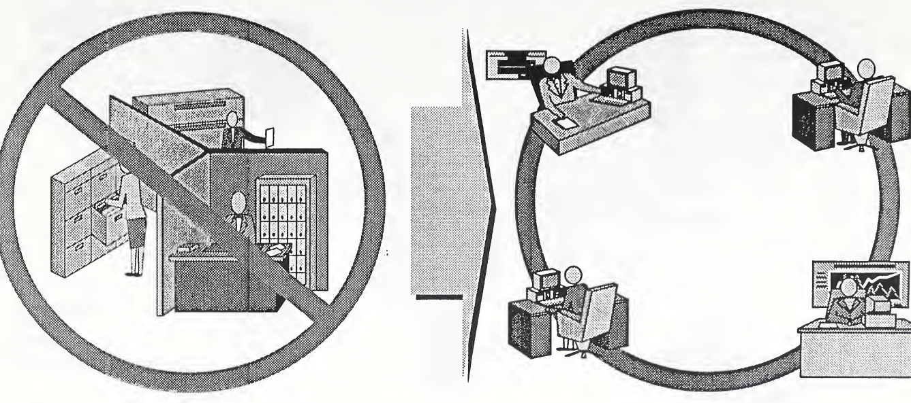
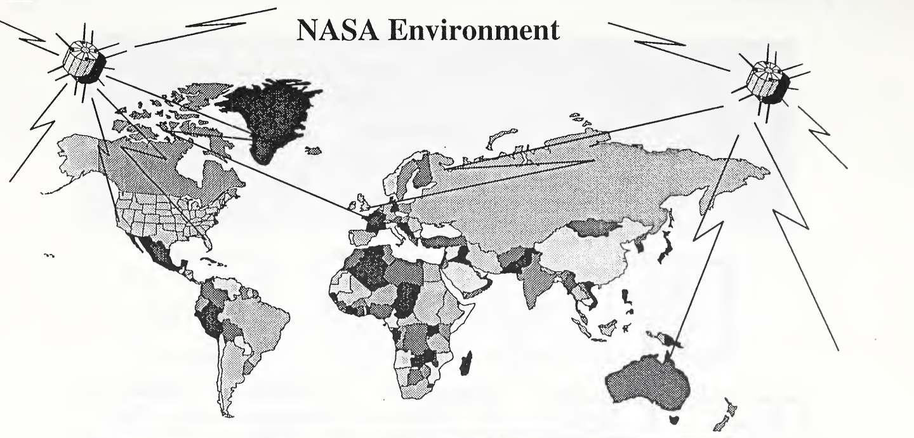
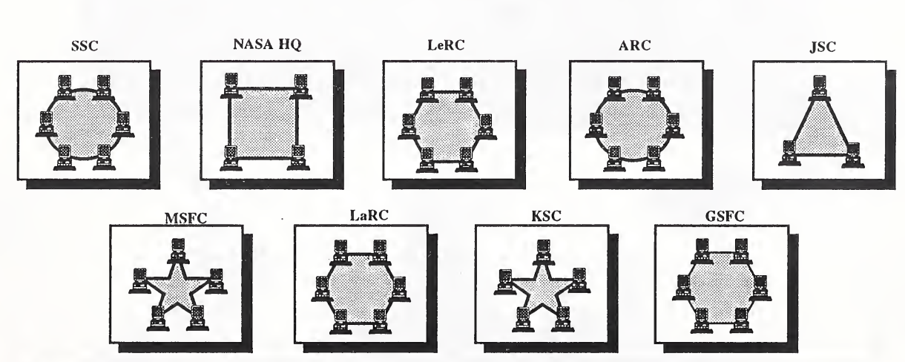
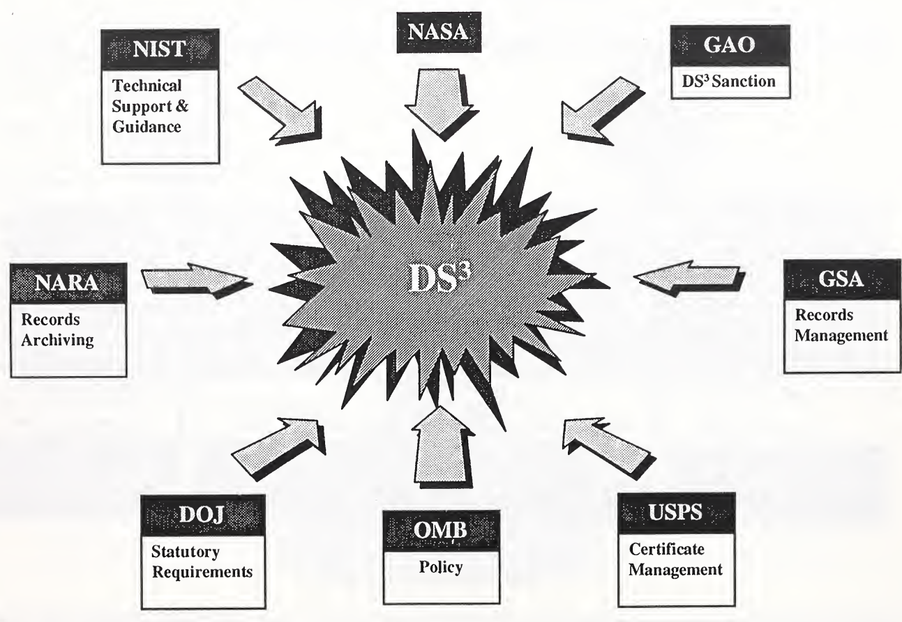

NIST IR 5234 日本語訳
英語タイトル : Report of the NIST Workshop on Digital Signature Certificate Management, December 10-11, 1992日本語タイトル : NIST デジタル署名証明書管理ワークショップの報告書 1992 年 12 月 10〜11 日
公開日 : 1993-10-01
原文URL : https://csrc.nist.gov/pubs/ir/5234/final
原本 PDF : https://doi.org/10.6028/NIST.IR.5234
訳文 : 有志による非公式の日本語訳（AI による翻訳とレビュー）。全 265 段落のうち 254 段落を翻訳済み（原文取得日 : 2026-10-31）
[要約] NIST IR 5234 は、1992 年 12 月 10 日と 11 日に開かれた、デジタル署名証明書管理に関する NIST のワークショップの報告書です。ワークショップの目的は、デジタル署名の認証局に関する既存の技術と必要な技術を見直し、証明書の内容、形式、生成、配布、保管に関する勧告を作成することで、結果は MITRE Corporation による連邦政府が支援する署名認証局の調査への入力として提供されます。議論の主な話題は、証明書の形式、証明書失効リスト（CRL）、証明書管理の階層の可能性、認証証明書と認可証明書の違いでした。ワークショップの勧告には、認証（識別）証明書に X.509 の証明書形式を使用すること、少なくとも認証証明書と認可証明書の 2 種類をサポートすることなどが含まれています。
NISTIR 5234
NISTIR 5234
Report of the NIST Workshop on Digital Signature Certificate Management
NIST デジタル署名証明書管理ワークショップの報告書
December 10-11, 1992
1992 年 12 月 10〜11 日
Dennis K. Branstad
Editor
Dennis K. Branstad
編者
U.S. DEPARTMENT OF COMMERCE
Technology Administration
National Institute of Standards and Technology
Computer Systems Laboratory
Gaithersburg, MD 20899
米国商務省
技術局
国立標準技術研究所（National Institute of Standards and Technology）
コンピュータシステム研究所（Computer Systems Laboratory）
Gaithersburg, MD 20899
NISTIR 5234
NISTIR 5234
Report of the NIST Workshop on Digital Signature Certificate Management
NIST デジタル署名証明書管理ワークショップの報告書
December 10-11, 1992
1992 年 12 月 10〜11 日
Dennis K. Branstad
Editor
Dennis K. Branstad
編者
U.S. DEPARTMENT OF COMMERCE
Technology Administration
National Institute of Standards and Technology
Computer Systems Laboratory
Gaithersburg, MD 20899
米国商務省
技術局
国立標準技術研究所（National Institute of Standards and Technology）
コンピュータシステム研究所（Computer Systems Laboratory）
Gaithersburg, MD 20899
October 1993
1993 年 10 月
U.S. DEPARTMENT OF COMMERCE
Ronald H. Brown, Secretary
TECHNOLOGY ADMINISTRATION
Mary L. Good, Under Secretary for Technology
NATIONAL INSTITUTE OF STANDARDS AND TECHNOLOGY
Arati Prabhakar, Director
米国商務省
Ronald H. Brown 長官
技術局
Mary L. Good 技術担当次官
国立標準技術研究所
Arati Prabhakar 所長
Table of Contents
目次
3.1 MITRE Certificate Infrastructure Study Status
3.1 MITRE の証明書インフラストラクチャ調査の状況
5.1.2 Credentials (ASN.1 Syntax)
5.1.2 クレデンシャル（ASN.1 構文）
1. Executive Summary
1. エグゼクティブサマリー
1.1 Purpose of the Workshop
1.1 ワークショップの目的
The purpose of the workshop was to review the existing and required technologies for digital signature certification authorities and to develop recommendations for certificate contents, formats, generation, distribution and storage. The results of the workshop will be provided to MITRE Corporation as input to its federally sponsored study of signature certification authorities.
このワークショップの目的は、デジタル署名の認証局に関する既存の技術と必要な技術を見直し、証明書の内容、形式、生成、配布、保管に関する勧告を作成することでした。ワークショップの結果は、連邦政府が支援する署名認証局の調査への入力として、MITRE Corporation に提供されます。
Invited participants represented various constituencies including the federal government, commercial organizations, standards organizations, and international interests.
招待された参加者は、連邦政府、商業組織、標準化団体、国際的な利害関係者など、さまざまな立場を代表していました。
1.2 Structure of the Workshop
1.2 ワークショップの構成
The workshop was organized as a sequence of presentations on selected topics, including: certificate infrastructure and technology, planned security offerings, needs of government organizations, international and commercial interests in digital signature technology, international standards for security in the context of X.509, and specific certificate contents and formats. Discussion about particular topics such as the contents of a certificate or a proposed hierarchy of certificate management authorities was not confined to any particular presentation but rather occurred in a continuous fashion throughout the two days of the workshop.
ワークショップは、証明書のインフラストラクチャと技術、計画されているセキュリティ提供サービス、政府機関のニーズ、デジタル署名技術に対する国際的および商業的な関心、X.509 に関連するセキュリティの国際標準、具体的な証明書の内容と形式など、選定された複数のテーマに関する一連の発表として構成されました。証明書の内容や、提案された証明書管理機関の階層など、特定の話題に関する議論は、特定の発表に限定されず、ワークショップの 2 日間を通じて継続的に行われました。
This report provides a summary of the major discussion points. It is organized chronologically by presentation.
本報告書は、主な論点の要約を提供するものです。発表ごとに時系列で構成されています。
1.3 Summary of the Major Issues
1.3 主な課題の要約
The major topics of discussion were certificate format, certification revocation lists (CRL's), possible certificate management hierarchies, and the difference between authentication and authorization certificates. Also discussed were the possibility of multiple signatures on a single certificate, liability, trust, cross certification, and different levels of assurance.
議論の主な話題は、証明書の形式、証明書失効リスト（CRL）、証明書管理の階層の可能性、認証証明書と認可証明書の違いでした。また、1 つの証明書に複数の署名を付ける可能性、責任、信頼、相互認証、保証レベルの違いも議論されました。
What follows is a summary of the major issues identified by workshop participants that must be addressed by any proposed certificate management solution.
以下は、ワークショップの参加者が特定した、証明書管理のどの解決策案でも対処しなければならない主な課題の要約です。
1.Certificate Revocation Lists
Certificate Revocation List management is of utmost importance to certificate users and must be done correctly. The following questions were discussed: Who is responsible for reporting a compromise or change of attribute?; Within what time frame should that reporting be done?; If it is a shared responsibility of the user and the CA (Certification Authority), how exactly will that responsibility be shared? How often will CRL's be issued? What will their format be, (e.g. PEM, X9F, X.509)?
1.証明書失効リスト
証明書失効リストの管理は、証明書の利用者にとって極めて重要であり、正しく行わなければなりません。次の質問が議論されました。侵害や属性の変更を報告する責任は誰にあるのか。その報告はどの期間内に行うべきなのか。利用者と CA（認証局）が責任を共有する場合、その責任を具体的にどのように分担するのか。CRL はどのくらいの頻度で発行されるのか。その形式は何か（たとえば PEM、X9F、X.509）。
2.Certificate Management Hierarchies
An integrated Certificate Authority structure must be a hierarchy. What will that hierarchy be for the federal government? Will it be formed along organizational lines or communities of interest? A naming schema for the federal government needs to be worked out. Who will do this? Will the choices in naming need to be restricted?
2.証明書管理の階層
統合された認証局の構造は、階層でなければなりません。連邦政府ではその階層はどうなるのか。組織の系統に沿って形成されるのか、それとも関心を共有する共同体に沿って形成されるのか。連邦政府の命名スキーマを検討する必要があります。誰がこれを行うのか。命名の選択肢を制限する必要はあるのか。
3.Costs
What are the cost estimates for each choice of hierarchy? What metrics can be used?
3.費用
階層の各選択肢について、費用の見積りはどうなるのか。どのような指標を使えるのか。
4.Certificates
Should we standardize requests for certificates or is this a local matter? Should we have multiply signed certificates and are these another kind of certificate in addition to authentication and authorization. What will be the format of an authorization certificate? Will the new work in security information objects be of use for authorization certificates? How should the unique id field of the 1992 X.509 certificate be used?
4.証明書
証明書の要求を標準化すべきでしょうか、それともこれは各組織に委ねるべきでしょうか。複数の署名が付いた証明書を設けるべきでしょうか。また、それらは認証証明書や認可証明書に加わる別の種類の証明書なのでしょうか。認可証明書の形式はどうなるのでしょうか。セキュリティ情報オブジェクトに関する新しい作業は、認可証明書に役立つのでしょうか。1992 年版 X.509 証明書の一意の識別子フィールドはどのように使うべきでしょうか。
1.4 Workshop Recommendations
1.4 ワークショップの勧告
The following list represents consensus on several of the major issues:
次の一覧は、主な課題のいくつかについての合意を示しています。
1.Use the X.509 certificate format for authentication (identification) certificates.
1.認証（識別）証明書には、X.509 の証明書形式を使用します。
2.At least two kinds of certificates should be supported:
a) Authentication certificates; and
b) Authorization certificates (for access control)
2.少なくとも次の 2 種類の証明書をサポートすべきです。
a) 認証証明書
b) 認可証明書（アクセス制御用）
3.An individual should have multiple certificates corresponding to different roles.
3.個人は、異なる役割に対応する複数の証明書を持つべきです。
4.International standards should be utilized.
4.国際標準を利用すべきです。
5.A certificate management hierarchy should include strict name subordination (in the X.500 sense) below the level of a CA.
5.証明書管理の階層は、CA のレベルより下では、（X.500 の意味での）厳密な名前の従属関係を含むべきです。
6.CA's should support different assurance levels and they should publicize their policies.
6.CA は異なる保証レベルをサポートすべきであり、その方針を公開すべきです。
7.An authorization certificate should contain the minimum amount of information which serves the purpose and this information should be closely coupled with the owner of the certificate (i.e., authentication information). This reduces the need to reissue certificates when authorities change.
7.認可証明書は、目的を果たす最小限の情報を含むべきであり、この情報は証明書の所有者（すなわち認証情報）と密接に結び付けるべきです。これにより、権限者が変わったときに証明書を再発行する必要が減ります。
2. Workshop Participants
2. ワークショップの参加者
Aiken, Dina
Ankney, Rich, Fischer International
Barker, Elaine, NIST
Baum, Michael
Branstad, Dennis, NIST
Chamberlain, Chuck, U.S. Postal Service
Chang, Shu-Jen, NIST
Crocker, Steve
Dusse, Steve, RSA Data Security, Inc.
Fischer, Addison
Galitzer, Shari, MITRE Corporation
Geiter, Jisoo
Gill, Dave, MITRE Corporation
Greenlee, Blake, M. Blake Greenlee Associates, Ltd.
Humphreys, Ted, Commission of the European Communities
Kent, Steve, BBN Communications
Moreau, Jean-Maurice, Communications Security Establishment, Canada
Shomo, Larry, NASA
Smid, Miles, NIST
Williams, Al, GSA
Williams, Peter, University College London
Aiken, Dina
Ankney, Rich, Fischer International
Barker, Elaine, NIST
Baum, Michael
Branstad, Dennis, NIST
Chamberlain, Chuck, U.S. Postal Service
Chang, Shu-Jen, NIST
Crocker, Steve
Dusse, Steve, RSA Data Security, Inc.
Fischer, Addison
Galitzer, Shari, MITRE Corporation
Geiter, Jisoo
Gill, Dave, MITRE Corporation
Greenlee, Blake, M. Blake Greenlee Associates, Ltd.
Humphreys, Ted, Commission of the European Communities
Kent, Steve, BBN Communications
Moreau, Jean-Maurice, Communications Security Establishment, Canada
Shomo, Larry, NASA
Smid, Miles, NIST
Williams, Al, GSA
Williams, Peter, University College London
3. Day 1 — Morning Presentations
3. 1 日目 — 午前の発表
3.1 Digital Signature Certificate Infrastructure Study
3.1 デジタル署名証明書インフラストラクチャの調査
Dave Gill, MITRE, Deputy Task Leader for the NIST sponsored digital signature certificate infrastructure study, presented an overview of that study, including the following topics: why an infrastructure is needed; one possible hierarchy; how the study is being conducted; a time table for deliverables; and who is funding and participating in the study.
NIST が支援するデジタル署名証明書インフラストラクチャの調査の副タスクリーダーである MITRE の Dave Gill が、その調査の概要を発表しました。内容は、なぜインフラストラクチャが必要か、考えられる階層の一つ、調査の進め方、成果物の日程、調査に資金を提供し参加しているのは誰か、といった話題でした。
An infrastructure is clearly needed to manage the public keys and provide some level of assurance as to their authenticity. The number of keys is potentially quite large (consider the IRS using this for electronic submission of 1040 forms). The potentially large number of keys implies the need for some sort of hierarchy of certificate authorities. Potential hierarchies that MITRE is considering include one used by the North American Directory Forum (NADF), one based on organizations, or one based on communities of interest, i.e. groups with the same security policies or requirements. The question of who will manage the US Government portion of the hierarchy is open for debate. MITRE's current thinking going into this workshop is that the responsibility may be divided among different agencies based primarily on different security requirements.
公開鍵を管理し、その真正性についてある程度の保証を提供するために、インフラストラクチャが明らかに必要です。鍵の数は非常に多くなる可能性があります（IRS が 1040 様式の電子提出にこれを使う場合を考えてください）。鍵の数が多くなる可能性があることは、何らかの認証局の階層が必要であることを示唆します。MITRE が検討している階層の候補には、North American Directory Forum（NADF）が使っているもの、組織に基づくもの、関心を共有する共同体、すなわち同じセキュリティ方針や要件を持つグループに基づくものがあります。階層のうち米国政府の部分を誰が管理するかという問題は、議論の余地があります。このワークショップに臨む時点での MITRE の現在の考えは、主に異なるセキュリティ要件に基づいて、責任を異なる機関に分担させるのがよいかもしれないというものです。
The methodology used in the study involves obtaining input from private organizations, federal agencies, standards organizations, and security experts and using that input to derive a set of user, legal and technical requirements.
調査で用いる方法論は、民間組織、連邦機関、標準化団体、セキュリティの専門家から意見を得て、その意見を使って一連の利用者、法的、技術的な要件を導き出すというものです。
Draft requirements in these three areas are due at the end of January, 1993. After that time, more interviews with federal agencies will take place regarding their intended application of digital signature technology. Infrastructure alternatives will be proposed by mid-March and the infrastructure analysis will be complete by June, 1993.
これら 3 つの分野の要件草案は、1993 年 1 月末に提出される予定です。その後、デジタル署名技術の利用予定について、連邦機関へのさらなる聞き取りが行われます。インフラストラクチャの代替案は 3 月中旬までに提案され、インフラストラクチャの分析は 1993 年 6 月までに完了します。
Eight federal agencies are funding the study; NIST is the coordinating agency. Dennis Branstad, the workshop coordinator, pointed out that the agencies funding the study are very interested in digital signature technology and the supporting infrastructure. He stated that the recommendation of the MITRE study will go to OMB who will be asked to act on it.
8 つの連邦機関が調査に資金を提供しており、NIST が調整機関です。ワークショップの調整役である Dennis Branstad は、調査に資金を提供している機関がデジタル署名技術とそれを支えるインフラストラクチャに非常に関心を持っていることを指摘しました。同氏は、MITRE の調査の勧告は OMB に送られ、OMB が対応を求められることになると述べました。
3.2 MITRE Certificate Technology Findings
3.2 MITRE の証明書技術に関する調査結果
Shari Galitzer presented MITRE's view of the current certificate technology. She discussed specific issues that need to be addressed in defining a certificate management infrastructure that can be extended easily and can support many different applications. She focussed on four separate areas: architecture, security policy, functional components and resource requirements.
Shari Galitzer が、現在の証明書技術に関する MITRE の見解を発表しました。同氏は、容易に拡張でき、多くの異なるアプリケーションをサポートできる証明書管理インフラストラクチャを定義するうえで対処する必要のある具体的な課題を論じました。同氏は、アーキテクチャ、セキュリティ方針、機能構成要素、資源要件の 4 つの個別の分野に焦点を当てました。
The hypothesis that the infrastructure must be a hierarchy was reinforced. A question of organization is, "Should the infrastructure be formed along organizational lines or communities of interest?" Interviews with various federal agencies about their user and legal requirements will be used to guide the final recommendation. It was suggested by several participants that MITRE ask the STU-III support people about the choices that were made regarding the key management structure for the STU-III system. Why is it flat? Does the structure relate to the security policy? Would they do it differently next time? MITRE was reminded that it is important to put the STU-III work in the context of the environment in which it operates; while some of the STU-III experience may be relevant to the digital signature infrastructure, it would be unwise to duplicate the STU-III choices without analysis.
インフラストラクチャは階層でなければならないという仮説が補強されました。組織に関する問題は、「インフラストラクチャは、組織の系統に沿って形成すべきか、それとも関心共同体に沿って形成すべきか」です。さまざまな連邦機関に対する、利用者要件と法的要件についての聞き取りは、最終的な勧告の指針として使われます。複数の参加者から、STU-III のシステムの鍵管理構造についてどのような選択がなされたかを STU-III の支援担当者に尋ねるよう、MITRE に提案がありました。なぜフラットなのでしょうか。その構造はセキュリティ方針と関係があるのでしょうか。次回は違う形にするのでしょうか。MITRE は、STU-III の取り組みを、それが運用される環境の文脈の中で捉えることが重要だと注意を受けました。STU-III の経験の一部はデジタル署名インフラストラクチャに関連する可能性がありますが、分析せずに STU-III の選択を踏襲するのは賢明ではないでしょう。
The discussion then centered on the scope of MITRE's study. Their charter is to recommend an infrastructure for government agencies. The scope of NIST's responsibilities does not include telling private industry what to do. However it is recognized that the recommended digital signature support infrastructure must work in an international environment and with the private sector. There is a strong interest in maintaining interoperability and compatibility with recognized standards. If the design is good, others may wish to duplicate it.
その後、議論は MITRE の調査の範囲に移りました。MITRE の任務は、政府機関向けのインフラストラクチャを勧告することです。NIST の責任の範囲には、民間産業に何をすべきかを指示することは含まれません。しかし、勧告されるデジタル署名支援インフラストラクチャは、国際的な環境で、また民間部門とともに機能しなければならないことは認識されています。認められた標準との相互運用性と互換性を維持することには強い関心があります。設計がよければ、ほかの人々がそれを複製したいと考えるかもしれません。
The issue of trust was then raised. One of the questions addressed was, "Which organizations could be trusted and what should be required of certifying authorities so that their certificates can be trusted?" The idea that there are different kinds of certificates and that a single certificate will not satisfy all needs was introduced.
その後、信頼の問題が提起されました。取り上げられた問題の一つは、「どの組織が信頼できるか、また、認証局が発行する証明書を信頼できるものにするために、認証局に何を求めるべきか」でした。証明書には異なる種類があり、1 つの証明書ではすべてのニーズを満たせないという考え方が紹介されました。
Major issues under the topic of security policy included: who should generate the keys; how to manage CRL's; what are the security requirements for managing a CA (certification authority); and how to deal with multiple roles of individuals. The ultimate goal is an infrastructure that will support a variety of security rules (i.e. policies) that any organization might want to impose/adopt.
セキュリティ方針という話題での主な課題には、誰が鍵を生成すべきか、CRL をどのように管理するか、CA（認証局）の管理にはどのようなセキュリティ要件があるか、個人の複数の役割にどう対処するかがありました。最終的な目標は、どの組織が課そうとしても、採用しようとしても、さまざまなセキュリティ規則（すなわち方針）をサポートできるインフラストラクチャです。
A lot of discussion centered around the question of how to provide for the multiple roles that an individual may hold at any one time. Should the same public key be in multiple authorization certificates? Should the same certificate be used for multiple roles? If the certificates or roles are associated with different organizations with different security policies and levels of assurance, it is unlikely that either of these alternatives will work. If one certificate has multiple authorizations with respect to the various roles bound into it, anytime one of the roles changes the whole certificate must be reissued. If those authorizations were all from different organizations, who would sign it? It was recognized by the participants that authentication and access control are two fundamentally different operations and that there is a need for different kinds of certificates. It was pointed out that X.509 is deficient in the aspect of handling multiple roles. New standards work is in progress on defining a more generic syntax for a "security certificate" that will be an extension to X.509 and allow different security services to be provided.
多くの議論が、個人が同時に持つ可能性のある複数の役割にどのように対応するかという問題を中心に行われました。同じ公開鍵を複数の認可証明書に入れるべきか。同じ証明書を複数の役割に使うべきか。証明書や役割が、異なるセキュリティ方針と保証レベルを持つ異なる組織に関連している場合、これらの選択肢のどちらもうまくいく可能性は低いでしょう。1 つの証明書に、さまざまな役割に関する複数の認可が組み込まれている場合、役割のいずれかが変わるたびに、証明書全体を再発行しなければなりません。それらの認可がすべて異なる組織によるものである場合、誰が署名するのか。参加者は、認証とアクセス制御が根本的に異なる 2 つの操作であり、異なる種類の証明書が必要であることを認識しました。X.509 は複数の役割の扱いの面で不十分であることが指摘されました。X.509 の拡張となり、異なるセキュリティサービスの提供を可能にする「セキュリティ証明書」について、より汎用的な構文を定義する新しい標準化作業が進行中です。
A discussion was held regarding who is responsible for making it known that a certificate has been revoked. A typical approach to answering a question like this is to look at how it is done now in paper and then to look at the technical and legal ramifications encountered when the manual procedure is automated. In the current revocation practice for credit cards, there is a split responsibility for financial liability between the credit card holder and the credit card issuer. The participants agreed that a split approach will probably be used electronically as well, with responsibility for notification and for liability shared between the user and the certification authority.
証明書が失効したことを周知する責任が誰にあるかについて、議論が行われました。このような問題に答える典型的な方法は、現在紙でどのように行われているかを見たうえで、手作業の手順を自動化したときに生じる技術的および法的な影響を検討することです。クレジットカードの現在の失効の慣行では、金銭的な責任は、クレジットカードの所持者と発行者の間で分担されています。参加者は、電子的にもおそらく分担型の方法が使われ、通知の責任と責任負担が、利用者と認証局の間で分担されるだろうということで一致しました。
The costs of the certificate management alternatives will be considered in the study. MITRE is eager for input on metrics to be used for analyzing costs. Cost is clearly an important issue. At least two ways of looking at costs were articulated. One is the business viewpoint which says, "What cost is acceptable so that a digital signature will be used?". The lower the cost the better (twenty-nine cents per signing was suggested). If the cost of the infrastructure is amortized over the total usage, then the cost per transaction is lower. However, if low value transactions dominate and there is no need for a signature on them, then the cost per signature will go up. The other viewpoint on costs is the futuristic approach, also referred to as the "certification field of dreams." This view is that we cannot anticipate today all the possible applications that may use certificates in the future. Therefore we cannot do a pure cost analysis. Rather we build the system in anticipation that other uses will occur. An analogy was drawn here to the work that has been done in computer communications. There is a need to balance these two viewpoints.
証明書管理の代替案の費用は、調査で検討されます。MITRE は、費用の分析に使う指標について意見を求めています。費用は明らかに重要な課題です。費用の見方が少なくとも 2 通り示されました。一つは事業の観点で、「デジタル署名が使われるようになるには、どの程度の費用なら許容できるか」というものです。費用は低いほどよいとされます（署名 1 回あたり 29 セントという案が出されました）。インフラストラクチャの費用を総利用量で償却すれば、取引あたりの費用は下がります。しかし、低額の取引が大半を占め、それらに署名が必要でない場合は、署名あたりの費用は上がります。費用に関するもう一つの観点は、将来を見据えた考え方で、「証明書の夢の畑」とも呼ばれます。この観点は、将来、証明書を使うかもしれないあらゆる応用を、今日予想することはできない、というものです。したがって、純粋な費用分析はできません。むしろ、ほかの用途が生まれることを見越してシステムを構築します。ここでは、コンピュータ通信で行われてきた取り組みとの類推が示されました。これら 2 つの観点のバランスを取る必要があります。
3.3 CEC Certificate Workshop Report
3.3 CEC の証明書ワークショップ報告
Ted Humphreys of the Commission of the European Communities (CEC) presented the results of a workshop held in Brussels on December 1-2, 1992. The title of the workshop was "Electronic Signature: The Key to Mobility". Ted explained the process by which a "Call for Ideas" was issued in May, 1992, and then the responses summarized in a document published in October, 1992. There was an overwhelming response to the Call for Ideas from the international community. Many application areas for electronic signatures were identified, including medical informatics, transportation, aerospace and personal communications. The workshop in Brussels was held to further explore the issues raised by the respondents.
Commission of the European Communities（CEC）の Ted Humphreys が、1992 年 12 月 1〜2 日にブリュッセルで開催されたワークショップの結果を発表しました。ワークショップの題名は「Electronic Signature: The Key to Mobility」でした。Ted は、1992 年 5 月に「Call for Ideas」が出され、その回答が 1992 年 10 月に発行された文書にまとめられた経緯を説明しました。国際社会から Call for Ideas に対して圧倒的な反応がありました。医療情報学、運輸、航空宇宙、個人通信など、電子署名の多くの応用分野が特定されました。ブリュッセルのワークショップは、回答者が提起した課題をさらに探るために開催されました。
Ted reinforced the idea that X.509 is applicable for a number of different security services (primarily related to authentication) but needs to be expanded to handle the very important idea of access control. He stressed the importance of using international standards and not reinventing what already exists.
Ted は、X.509 は（主に認証に関連する）さまざまなセキュリティサービスに適用できますが、アクセス制御という非常に重要な考え方を扱えるよう拡張する必要があるという考えを補強しました。同氏は、国際標準を使い、すでにあるものを作り直さないことの重要性を強調しました。
A question was asked about the requirement for a license to import cryptography in some European countries. This and other legal issues are being addressed. Not only are there legal differences internationally, but also internally within the European community. Ted gave an example of unique identifiers which are acceptable in some countries in Europe and not acceptable in others. Another question was asked about the differences between the legal systems in Europe with regard to cryptography. A study is being done that addresses the various European legal perspectives on intellectual property rights issues. Dennis Branstad announced that NIST is sponsoring a study on export laws and other legal topics related to cryptography in the United States and other countries.
一部のヨーロッパ諸国で暗号を輸入するのに許可が必要であることについて、質問がありました。これとほかの法的課題は検討されています。国際的に法的な違いがあるだけでなく、ヨーロッパ共同体の内部にも違いがあります。Ted は、ヨーロッパの一部の国では認められるがほかの国では認められない一意の識別子を例に挙げました。暗号に関するヨーロッパの法制度の違いについても、別の質問がありました。知的財産権の課題に関するヨーロッパのさまざまな法的観点を扱う調査が行われています。Dennis Branstad は、NIST が、米国およびその他の国々における暗号に関する輸出法やその他の法的な話題についての調査を支援していると発表しました。
Ted finished his presentation by pointing out that the British Post Office is looking at digital signatures and how to link up with their counterparts in other countries.
Ted は、英国郵便局がデジタル署名と、他国の相当する機関との連携方法を検討していることを指摘して、発表を終えました。
3.4 International Interests
3.4 国際的な関心
3.4.1 Communications Security Establishment (CSE), Canada
3.4.1 Communications Security Establishment (CSE)、カナダ
An informal report was given by Jean-Maurice Moreau of the CSE. CSE is the Canadian government agency that provides advice on communications security. Its scope of authority is both "low-grade" and "high-grade" applications, or what we would call unclassified and classified. CSE wants agencies to implement electronic authentication and authorization for electronic transfers. They are now in the definition state, looking at the user requirements. A requirements paper will be produced by the end of February, 1993. The architecture should be defined by the summer.
CSE の Jean-Maurice Moreau が、非公式の報告を行いました。CSE は、通信セキュリティに関する助言を提供するカナダ政府機関です。その権限の範囲は「低グレード」と「高グレード」の両方のアプリケーション、すなわち私たちの言う非機密と機密です。CSE は、各機関に、電子的な転送のための電子的な認証と認可を実装してほしいと考えています。現在は定義の段階にあり、利用者の要件を検討しています。要件に関する文書は 1993 年 2 月末までに作成される予定です。アーキテクチャは夏までに定義すべきです。
3.4.2 University College London (UCL)
3.4.2 University College London (UCL)
Peter Williams talked about the security related work being done at UCL that is funded by the CEC. It is a pilot project that by the end of 1993 will have 30 sites in three different countries exchanging X.400 (Message Handling Systems) and X.500 (Directory) services and have a certification infrastructure in place. They are using existing Open System Interconnection (OSI) protocols and are not involved in a discussion of what should be in certificates. In this project, UCL is taking a different approach. Instead of defining and analyzing the requirements for an infrastructure first, they are implementing a prototype infrastructure first and will perform the analysis afterwards.
Peter Williams は、CEC が資金を提供している、UCL で行われているセキュリティ関連の研究について話しました。これは、1993 年末までに、3 つの異なる国の 30 拠点が X.400（Message Handling Systems）と X.500（Directory）のサービスを交換し、認証のインフラストラクチャを整えるというパイロットプロジェクトです。既存の開放型システム間相互接続（OSI）プロトコルを使っており、証明書に何を含めるべきかという議論には関与していません。このプロジェクトでは、UCL は異なるアプローチを取っています。インフラストラクチャの要件を先に定義して分析するのではなく、先にプロトタイプのインフラストラクチャを実装し、分析は後で行います。
The countries involved are using their own implementations of the OSI protocols and security toolkits to avoid import and export rules. It was commented that using multiple implementations is a good way to check out the protocol specifications. In response to a question about possible U.S. involvement in this project, Peter said that UCL welcomed U.S. participation; just bring your own software.
関係する国々は、輸入と輸出の規則を避けるため、OSI プロトコルとセキュリティツールキットのそれぞれ独自の実装を使っています。複数の実装を使うことは、プロトコルの仕様を確認する良い方法であるとの意見が出されました。このプロジェクトへの米国の参加の可能性に関する質問に対し、Peter は、UCL は米国の参加を歓迎しており、自分のソフトウェアを持ってきてもらえばよいと述べました。
4. Day 1 — Afternoon Presentations
4. 1 日目 — 午後の発表
4.1 Federal Interests
4.1 連邦の関心
4.1.1 NASA Digital Signature and Security Services System
4.1.1 NASA Digital Signature and Security Services System
Larry Shomo described NASA's need to replace paper documents with electronic ones and to do so in a uniform way across the organization. While financial applications were the impetus to the original idea, there is an interest in developing a much broader infrastructure that will support many applications. Providing a complete electronic document environment for NASA would go beyond just security features and would include the ability to (1) read documents prepared with previous versions or types of software, (2) maintain electronic archives, and (3) perform search and retrieval of documents. NASA interacts with businesses and universities throughout the world and any solution must work in this context. Furthermore, it must be capable of operating on and with a diverse set of hardware and software.
Larry Shomo は、紙の文書を電子的なものに置き換え、それを組織全体で統一的な方法で行うという NASA のニーズを説明しました。当初の発想の契機は財務アプリケーションでしたが、多くのアプリケーションを支える、はるかに広範なインフラストラクチャを開発することにも関心があります。NASA に完全な電子文書環境を提供することは、セキュリティ機能だけにとどまらず、（1）以前のバージョンや種類のソフトウェアで作成された文書を読む、（2）電子アーカイブを維持する、（3）文書の検索と取り出しを行う、という能力も含みます。NASA は世界中の企業や大学と関わっており、どのような解決策もこの文脈で機能しなければなりません。さらに、多様なハードウェアとソフトウェアの上で、またそれらとともに動作できなければなりません。
With those requirements stated, Larry went on to describe an ambitious set of objectives that the system should meet and services it should provide. He stated that NASA's Information Research Management (IRM) council has adopted this system as a standard for NASA. He also hopes that if done right, other government agencies may adopt it as well. He expects an interagency agreement to be signed with NIST by early January; a prototype system developed within 11 months; and 6 months later, the technical specifications should be available for a Request for Proposal (RFP).
これらの要件を述べたうえで、Larry は、システムが満たすべき野心的な一連の目標と、提供すべきサービスを説明しました。同氏は、NASA の Information Research Management（IRM）評議会がこのシステムを NASA の標準として採用したと述べました。また、適切に行われれば、ほかの政府機関も採用する可能性があると期待しています。同氏は、1 月上旬までに NIST との機関間協定が締結され、11 か月以内にプロトタイプシステムが開発され、その 6 か月後には、提案依頼書（RFP）のための技術仕様が利用可能になると見込んでいます。
4.1.2 GSA Perspective
4.1.2 GSA の見解
Al Williams stated GSA's objective: to replace a number of paper documents with electronic equivalents (the same as NASA). They would like to see a government-wide, classified and un-classified, integrated solution that provides many different types of security services. He recognized that trust is required in those providing the security services. His comment that this should be "integrated" provoked much discussion. This discussion paralleled a similar discussion in the morning session on how to figure cost. The question is, "Can you design a complete system that anticipates every future requirement and every application's need, or should you start with one area, e.g. the certificate infrastructure for supporting digital signatures, and design it without the applications already developed and in place?" There is considerable feeling that it is possible and a good idea to focus on a single area, do a good job and learn from the experience. There is a danger that too large a project will not succeed. Another comment concerned the feasibility of expecting vendors to incorporate specific security services into their products, such as secure logins in the operating system, and in so doing make those services available for off the shelf purchase. While it may be possible for the government to hire a contractor to build security services at the application level, it is difficult, if not impossible, to get vendors to change their operating system or network protocol in response to government requirements.
Al Williams は、GSA の目標を述べました。それは、多数の紙の文書を電子的な同等物に置き換えること（NASA と同じ）です。同氏らは、多くの異なる種類のセキュリティサービスを提供する、機密・非機密を含む政府全体の統合された解決策を望んでいます。同氏は、セキュリティサービスを提供する者に信頼が必要であることを認識していました。「統合」されるべきだという同氏の発言は、多くの議論を呼びました。この議論は、午前のセッションでの費用の算定方法に関する同様の議論と並行するものでした。問題は、「将来のあらゆる要件とあらゆるアプリケーションのニーズを見越した完全なシステムを設計できるのか、それとも 1 つの分野、たとえばデジタル署名を支える証明書インフラストラクチャから始めて、アプリケーションがまだ開発・導入されていない段階で設計すべきなのか」です。単一の分野に焦点を当て、よい仕事をして、その経験から学ぶことは可能であり、よい考えであるという意見がかなりありました。大きすぎるプロジェクトは成功しない危険があります。もう一つの意見は、オペレーティングシステムでの安全なログインなどの特定のセキュリティサービスを製品に組み込むようベンダーに期待し、そうすることでそれらのサービスを既製品として購入できるようにすることが実現可能かどうかに関するものでした。政府が請負業者を雇ってアプリケーションレベルでセキュリティサービスを構築させることは可能かもしれませんが、政府の要件に応じてベンダーにオペレーティングシステムやネットワークプロトコルを変更させることは、不可能とまではいかなくても困難です。
4.2 Commercial Interests
4.2 商業的な関心
4.2.1 RSA, Inc.
4.2.1 RSA, Inc.
Steve Dusse described RSA Data Security, Inc.; its history, its customers, its concerns, and then stressed their interest in supporting not just the RSA algorithm but also other "cryptographic solutions" including DES, DSS, etc. He described their work on PKCS (Public Key Cryptography Standards). The certificate used in this standard is compatible with PEM (Privacy Enhanced Mail) certificates and in tune with the 1992 X.509 standard. The PKCS will be used by several vendors, including Apple and Microsoft, to produce office workgroup software. He described a new product for CA's to be used for issuing certificates. This product includes a database to be used by the CA's for certificate management, tracking and querying. It also includes a signing unit, built by BBN, that is tamper proof (the private key is destroyed if the box is tampered with), makes a public-private key pair for signing certificates where the private key remains inside the unit, and is controlled by "user-friendly" software.
Steve Dusse は、RSA Data Security, Inc. の沿革、顧客、関心事を説明したうえで、RSA アルゴリズムだけでなく、DES、DSS などのほかの「暗号による解決策」もサポートすることに関心があることを強調しました。同氏は、PKCS（Public Key Cryptography Standards）に関する同社の取り組みを説明しました。この標準で使われる証明書は PEM（Privacy Enhanced Mail）の証明書と互換性があり、1992 年版 X.509 標準に沿っています。PKCS は、Apple や Microsoft を含む複数のベンダーが、オフィスのワークグループ用ソフトウェアを作るために使う予定です。同氏は、CA が証明書の発行に使う新製品を説明しました。この製品には、CA が証明書の管理、追跡、照会に使うデータベースが含まれます。また、BBN が製作した署名ユニットも含まれ、これは耐タンパ性があり（筐体に不正な操作が加えられると秘密鍵が破棄されます）、証明書に署名するための公開鍵と秘密鍵の鍵ペアを、秘密鍵がユニット内にとどまる形で作成し、「使いやすい」ソフトウェアで制御されます。
Steve stated that while we know a lot about certificates and their format, their use is still new in the business world and we lack experience in certificate management. He further asserted that certificates provide assurance of identity but little is understood about liability. For these reasons, a continuance of pair wise agreements may be required among cooperating organizations in order to conduct business.
Steve は、証明書とその形式についてはよくわかっていますが、ビジネスの世界での利用はまだ新しく、証明書管理の経験が不足していると述べました。さらに同氏は、証明書は身元の保証を提供しますが、責任についてはほとんど理解されていないと主張しました。これらの理由から、取引を行うには、協力する組織間で、二者間の合意を引き続き結ぶ必要があるかもしれません。
The discussion then moved to X.509 certificates and the need for authentication and authorization certificates. X.509 certificates were developed to satisfy a need for strong authentication in the context of the Directory. There are now applications that need wider services and X.509 is being improved to offer more generic certificates.
その後、議論は X.509 証明書と、認証証明書と認可証明書の必要性に移りました。X.509 証明書は、ディレクトリの文脈における強力な認証の必要性を満たすために開発されました。現在では、より広範なサービスを必要とするアプリケーションがあり、X.509 は、より汎用的な証明書を提供するよう改良されつつあります。
It is useful when discussing possible authorization certificates to consider how access control is accomplished in operating systems. Access control can be done by using access control lists (which represent the columns of an access control matrix) or by using capabilities (which represent the rows of the same matrix). They both perform equivalent functions but have unique tradeoffs. Access control lists consist of all the entities that have a right to access a particular resource. Capabilities are tickets that an entity presents when accessing a resource that say the entity has the proper access rights. It is possible to build an identity based access control scheme using X.509 certificates as entries in an access control list. One potential drawback is the cost of managing those lists. Another one is that while one CA may be trusted to vouch for someone's identity, another CA or organization may need to authorize that identified individual. Certificates could have multiple signatures, but as soon as one item in the certificate changes, the entire certificate must be reissued. If the capability approach is chosen instead of an ACL approach, then a new certificate format is needed for an authorization certificate. This format should be sufficiently general so that it can be used by any application.
認可証明書の可能性を議論する際には、オペレーティングシステムでアクセス制御がどのように行われているかを考えると役立ちます。アクセス制御は、アクセス制御リスト（アクセス制御行列の列を表します）を使うか、ケイパビリティ（同じ行列の行を表します）を使うかで行えます。どちらも同等の機能を果たしますが、それぞれに固有のトレードオフがあります。アクセス制御リストは、特定の資源にアクセスする権利を持つすべてのエンティティで構成されます。ケイパビリティは、エンティティが資源にアクセスするときに提示するチケットで、そのエンティティが適切なアクセス権を持っていることを示します。X.509 証明書をアクセス制御リストのエントリとして使って、身元に基づくアクセス制御の方式を構築することは可能です。起こりうる欠点の一つは、それらのリストを管理する費用です。もう一つは、ある CA が誰かの身元を保証することを信頼できるとしても、その身元が確認された個人を認可するのは、別の CA や組織である必要がある場合があることです。証明書に複数の署名を付けることは可能ですが、証明書内の項目が 1 つでも変わると、証明書全体を再発行しなければなりません。ACL の方式ではなくケイパビリティの方式を選ぶ場合は、認可証明書のための新しい証明書の形式が必要です。この形式は、どのアプリケーションでも使えるよう、十分に汎用的であるべきです。
Another topic which arose from the previous discussion was how to make an identity unique. Your name is guaranteed unique only if enough context is provided to differentiate you from others with the same name, e.g. your home address or your employer and position in that company. Much of that information may be of no interest for the purposes of certificate management. On the other hand, if using identity based access control, the application may wish to use the related information supplied with the name to make a decision about authorization.
これまでの議論から生じたもう一つの話題は、身元を一意にする方法でした。名前が一意であることが保証されるのは、同じ名前を持つほかの人と区別するのに十分な文脈、たとえば自宅の住所や、勤務先とその会社での役職が提供される場合に限られます。そうした情報の多くは、証明書管理の目的では重要でないかもしれません。一方、身元に基づくアクセス制御を使う場合、アプリケーションは、名前とともに提供される関連情報を、認可の判断に使いたいと考えるかもしれません。
4.2.2 Fischer International
4.2.2 Fischer International
Addison Fischer, president of Fischer International, introduced his company and his primary concerns as a software producer for an international market. His company produces four RSA based products, including a PEM implementation. They use the X.509 certificate format. His message was that since his company does software for many customers, not just the government, the government should stay with the standards that everyone else is using if they want to buy products off the shelf. He also expressed a concern over supporting multiple cryptographic algorithms. It was pointed out that many algorithms could coexist within a particular certificate infrastructure. In particular, the X.509 certificate format gives the ability to select different algorithms or key lengths.
Fischer International の社長である Addison Fischer は、自社と、国際市場向けのソフトウェア製作者としての主な関心事を紹介しました。同社は、PEM の実装を含む RSA ベースの 4 つの製品を製作しています。X.509 の証明書形式を使っています。同氏のメッセージは、同社が政府だけでなく多くの顧客のためにソフトウェアを作っているため、政府が既製品を購入したいのであれば、ほかのすべての人が使っている標準にとどまるべきだ、というものでした。同氏は、複数の暗号アルゴリズムをサポートすることについても懸念を示しました。特定の証明書インフラストラクチャの中に、多くのアルゴリズムが共存できることが指摘されました。特に、X.509 の証明書形式では、異なるアルゴリズムや鍵長を選択できます。
4.3 What's in a Public Key Certificate?
4.3 公開鍵証明書に含まれるもの
Steve Kent explained his view of what should be in a public key certificate and why. He explained that it is difficult to get one certificate to fit all needs. There are different attributes that are of interest to different applications (e.g clearance levels in the military or financial authority in business), there are different entities to vouch for these attributes, and there are different validity time frames. All these reasons suggest that there will be more than one certificate for each individual, as well as more than one type of certificate (e.g. authentication and authorization). Concern was voiced that the certificates would proliferate rapidly and we would have the electronic equivalent of a thick billfold. It was agreed that while one certificate per individual will not work, in part because organizations want to control their authorizations and because differing levels of assurance of identity may be needed, it is important not to have too many certificates since the management would become unwieldy.
Steve Kent は、公開鍵証明書に何を含めるべきか、またその理由について、自らの見解を説明しました。同氏は、1 つの証明書をすべてのニーズに合わせるのは難しいと説明しました。アプリケーションごとに関心を持つ属性が異なり（たとえば軍におけるクリアランスレベルや、ビジネスにおける財務上の権限）、これらの属性を保証するエンティティも異なり、有効期間も異なります。これらの理由はすべて、各個人に複数の証明書があること、また証明書の種類も複数あること（たとえば認証と認可）を示唆しています。証明書が急速に増え、電子版の分厚い財布を持つようなことになるという懸念が示されました。組織が自らの認可を管理したがることや、異なるレベルの身元の保証が必要になる場合があることなどから、個人あたり 1 つの証明書では機能しないものの、管理が手に負えなくなるため、証明書があまり多くならないようにすることが重要であるとの合意がありました。
It was again mentioned that X.509 is being extended to handle a wider range of applications. Standards work is progressing on defining "security certificates" to support security information objects. It was asserted that certificates of a more general type could be used for rule-based authorization where identity was not important or desired.
X.509 が、より広範なアプリケーションを扱えるよう拡張されつつあることが、再び言及されました。セキュリティ情報オブジェクトをサポートする「セキュリティ証明書」を定義する標準化作業が進んでいます。身元が重要でない、あるいは望まれない場合の規則ベースの認可には、より汎用的な種類の証明書を使えるという主張がありました。
The next discussion centered on the issue of trust and levels of trust. First, we must trust the issuer to vouch for the validity of the attributes that are bound in the certificate and that they have been accurately bound. Second, how will a CA identify any entity and to what level of assurance? Will there be different levels of assurance offered by a single CA, that is, will a single CA offer different levels of checking attributes; or will there be different levels of CA's, that is, will some CA's require higher validity assurance of the attributes presented to them? It was agreed that there would be different levels of CA's, that they would make their policies known, and anything signed by them would comply with that standard of checking. For instance, a CA signing certificates in a classified environment would do a higher level of checking than a CA in an unclassified environment.
次の議論は、信頼と信頼のレベルの問題を中心に行われました。第一に、証明書に結び付けられた属性が有効であり、正確に結び付けられていることを保証する発行者を信頼しなければなりません。第二に、CA はどのようにエンティティを識別し、どのレベルの保証を与えるのでしょうか。単一の CA が異なる保証レベル、つまり属性確認のレベルが異なるサービスを提供するのでしょうか。それとも、異なるレベルの CA が存在するのでしょうか。つまり、提示された属性について、より高い有効性の保証を求める CA があるのでしょうか。CA には異なるレベルがあり、それぞれが自らの方針を公開し、その CA によって署名されたものはすべて、その確認基準に従うことで合意されました。たとえば、機密環境で証明書に署名する CA は、非機密環境の CA より高いレベルの確認を行います。
Steve's last point about trust was that "A certificate vouching for an identity binding does not imply trust in the identified entity." It is important not to get confused about what we are trusting and what is being certified.
信頼に関する Steve の最後の論点は、「身元の結び付けを保証する証明書は、その身元が確認されたエンティティに対する信頼を意味しない」というものでした。何を信頼し、何が証明されているのかについて、混同しないことが重要です。
Another issue regarding certificates is that of revocation. If we use the capability analogy from operating systems to describe a certificate, then we know that revocation is difficult. You cannot, in general, find all the certificates and "pull" them back. It was suggested that when certificates are used as authorization, then a combination of a "push" and "pull" model must be used, especially as the number of users gets larger. In particular, revocation lists could be periodically published ("push") and also the most current version could be available online for checking if the transaction is valuable enough ("pull").
証明書に関するもう一つの課題は失効です。証明書を説明するのにオペレーティングシステムのケイパビリティの類推を使うなら、失効が難しいことがわかります。一般に、すべての証明書を見つけて「引き戻す」ことはできません。証明書が認可として使われる場合は、特に利用者数が増えるにつれて、「プッシュ」と「プル」を組み合わせたモデルを使わなければならないという意見が出されました。特に、失効リストを定期的に公開し（「プッシュ」）、取引に十分な価値がある場合に確認できるよう、最新版をオンラインで利用できるようにすること（「プル」）が提案されました。
The discussion then went back to authorization certificates vs. identification certificates. Concerns were raised that having too many different formats for certificates would make implementation difficult. It was suggested that an appropriately general format for an authorization certificate could be developed that would represent a compromise between fixed fields required for all applications and some flexibility to define new attributes for particular applications. It was agreed that binding too much unrelated information about an individual into one authorization certificate would be a bad idea for several reasons. One, there may be privacy concerns associated with some of the identifying information. Two, if one piece of information changes then the entire certificate must be reissued. If identification is separated from authorization, then changing an authorization certificate would occur less often. By binding less information into a certificate, certificates could support the principle of least privilege or need to know.
その後、議論は認可証明書と識別証明書に戻りました。証明書の形式が多すぎると実装が難しくなるという懸念が示されました。すべてのアプリケーションに必要な固定フィールドと、特定のアプリケーション向けに新しい属性を定義する柔軟性の間の妥協となるような、適度に汎用的な認可証明書の形式を開発できるのではないかという意見が出されました。個人に関する無関係な情報を 1 つの認可証明書にあまりにも多く結び付けるのは、いくつかの理由から悪い考えであるとの合意がありました。一つは、識別情報の一部にプライバシーの懸念がありうることです。二つ目は、情報が 1 つ変わると証明書全体を再発行しなければならないことです。識別を認可から切り離せば、認可証明書の変更はあまり起こらなくなります。証明書に結び付ける情報を少なくすることで、証明書は最小権限や知る必要性の原則をサポートできます。
The issue of individual names was raised. The X.509 subject field is a distinguished name. This format is well-defined, however, the naming hierarchy for the United States (C=US) is not yet worked out. The NADF (North American Directory Forum), a self-appointed group, is working on one schema for an X.500 directory project. This does not address certificates directly. Steve Kent suggested that the names would separate an individual's role from his/her unique identity. If we assume that people change roles frequently within an organization, then this would minimize name changes and subsequent reissuing of identification certificates. On the other hand, if movement is rare in an organization this may not be needed. It seemed clear that some guidance should be provided on the schema for the U.S. Government, but it was not clear what that would be.
個人名の問題が提起されました。X.509 の subject フィールドは識別名です。この形式は明確に定義されていますが、米国（C=US）の命名階層はまだ策定されていません。自称の団体である NADF（North American Directory Forum）は、X.500 ディレクトリプロジェクトのためのスキーマに取り組んでいます。これは証明書を直接扱うものではありません。Steve Kent は、名前によって個人の役割と固有の身元を別々に表すことを提案しました。組織内で人が頻繁に役割を変えると仮定すると、これにより名前の変更と、それに伴う識別証明書の再発行を最小限にできます。一方、組織内での異動がまれであれば、これは必要ないかもしれません。米国政府のスキーマについては何らかの指針を示すべきであることは明らかなようでしたが、それがどのようなものになるかは明らかではありませんでした。
4.4 Initial Recommendations
4.4 当初の勧告
Based on the discussions on certificate contents that had taken place throughout the day, two recommendations were endorsed by the participants. They were:
1 日を通じて行われた証明書の内容に関する議論に基づき、参加者は 2 つの勧告を承認しました。それらは次のとおりです。
•There should be at least two types of certificates, an identification certificate and an authorization certificate. They may have different contents and formats because they have a different set of requirements.
•証明書には、少なくとも識別証明書と認可証明書の 2 つの種類があるべきです。それらは要件が異なるため、内容と形式が異なる場合があります。
•The format for the identification certificate should be X.509. The format for the authentication certificate is unknown at this time but will be different from the id certificate.
•識別証明書の形式は X.509 とすべきです。認証証明書の形式は現時点では未定ですが、識別証明書とは異なるものになります。
A participant pointed out that certificates may not always be the proper choice for authorization. In some situations, other mechanisms could be used. It was clarified that the "security certificate" is a general term not to be confused with authorization certificate.
証明書は、認可に常に適した選択肢であるとは限らないと、ある参加者が指摘しました。状況によっては、ほかの仕組みを使うこともできます。「セキュリティ証明書」は一般的な用語であり、認可証明書と混同すべきではないことが明確にされました。
4.5 X.509 Certificate Format
4.5 X.509 証明書の形式
Ted Humphreys presented a summary of identified deficiencies in the 1988 version of the X.509 certificate format and in the revocation list format. Some, but not all of these defects, are addressed in the 1992 version of the standard. The particular deficiencies relating to the format of the certificates are listed in his paper "Security Certificates". They include concerns over reuse of Distinguished Names, how to distinguish between a user certificate and a CA certificate, and how the certificate is stored.
Ted Humphreys は、1988 年版の X.509 証明書の形式と失効リストの形式で確認された欠陥の要約を発表しました。これらの欠陥の一部は、標準の 1992 年版で対処されていますが、すべてではありません。証明書の形式に関する具体的な欠陥は、同氏の論文「Security Certificates」に挙げられています。それらには、識別名の再利用に関する懸念、利用者証明書と CA 証明書の区別の方法、証明書の保管方法が含まれます。
The defects in the revocation list format and/or suggested repairs include: a change in the ASN.1 syntax from a SIGNED SEQUENCE OF SEQUENCE to a SEQUENCE OF SIGNED SEQUENCE; there is a difference in the date at which a user requests revocation and when it is actually done; there is no indication of when the next revocation list will be issued; and the management of a potentially very large revocation list. Steve Kent explained the difference between the proposed way of doing revocation lists (SEQUENCE OF SIGNED SEQUENCE) and the way that PEM does it. In X.509, when a notice of a revoked certificate is signed by the issuer of that certificate and stored in a revocation list, it is acceptable for the issuer of the revocation list to be different from the issuer of the notices of revoked certificates within it. The PEM group did not adopt this, since a CA should not be able to revoke a certificate that someone else signed, and therefore they chose a different structure (SIGNED SEQUENCE OF SEQUENCE). The syntax of the revocation lists is significantly different in PEM and X.509. The question was asked, could one group accept the other's proposal. Steve Kent replied that for PEM, putting in the next date of issue for a CRL is a security issue and could not be negotiated. This feature is still lacking in the 1992 standard. Ted suggested that future work on security services not arising in the context of the Directory will be handled in other groups as a general security problem. Work on more general security information objects may overcome this difference between the two groups.
失効リストの形式に関する欠陥や提案された修正には、次のものがあります。ASN.1 構文を SIGNED SEQUENCE OF SEQUENCE から SEQUENCE OF SIGNED SEQUENCE に変更すること、利用者が失効を要求した日付と実際に失効が行われる日付の違い、次の失効リストがいつ発行されるかを示す情報がないこと、そして非常に大きくなりうる失効リストの管理です。Steve Kent は、失効リストを作成する提案された方法（SEQUENCE OF SIGNED SEQUENCE）と、PEM 方式との違いを説明しました。X.509 では、失効した証明書の通知が、その証明書の発行者によって署名されて失効リストに保存される場合、失効リストの発行者が、リストに含まれる失効証明書の通知の発行者と異なっていてもよいとされています。PEM のグループは、CA がほかの誰かが署名した証明書を失効させるべきではないとして、これを採用せず、異なる構造（SIGNED SEQUENCE OF SEQUENCE）を選びました。失効リストの構文は、PEM と X.509 で大きく異なります。一方のグループが他方の提案を受け入れることができるかという質問がありました。Steve Kent は、PEM では、CRL に次回の発行日を入れることはセキュリティ上の問題であり、交渉できないと答えました。この機能は、1992 年版の標準でもまだ欠けています。Ted は、ディレクトリの文脈で生じないセキュリティサービスに関する今後の作業は、一般的なセキュリティ上の問題として、ほかのグループで扱われると示唆しました。より汎用的なセキュリティ情報オブジェクトに関する作業が、2 つのグループの間のこの違いを克服する可能性があります。
A further incompatibility surfaced when the group was told that the ANSI X.9 revocation list format uses the basic PEM format but then adds a reason code that tells why the certificate was revoked. The reasoning behind this is that in the financial community, if it were a serious key compromise, they would want to move quickly to limit damage. On the other hand, less serious reasons, such as a change of affiliation might result is a more measured response.
ANSI X.9 の失効リストの形式が、基本的な PEM の形式を使いつつ、証明書が失効した理由を示す理由コードを追加していることが伝えられると、さらなる非互換が明らかになりました。その理由は、金融業界では、深刻な鍵の危殆化であれば、被害を抑えるために迅速に動きたいと考えるからです。一方、所属の変更など、それほど深刻でない理由であれば、より慎重な対応になる可能性があります。
4.6 General Discussion of Certificate Revocation Lists and Naming
4.6 証明書失効リストと命名に関する全般的な議論
Some of the issues regarding CRL management were discussed. One issue is how the CRL's can be used to provide a nonrepudiation service. In order to show that a signature was valid at a particular time, it is not sufficient to store just the CRL that is in use at that time. Rather, an updated CRL must also be stored when it is next issued, in case the key is compromised between the time of issue of the first and second CRL. How often CRL's will be published is not yet specified and will probably be a local management decision by a CA.
CRL の管理に関する課題のいくつかが議論されました。課題の一つは、CRL を否認防止サービスの提供にどのように使えるかです。署名が特定の時点で有効であったことを示すには、その時点で使われていた CRL を保存するだけでは十分ではありません。1 つ目の CRL の発行から 2 つ目の CRL の発行までの間に鍵が危殆化した場合に備えて、次に発行されるときに、更新された CRL も保存しなければなりません。CRL をどのくらいの頻度で公開するかは、まだ規定されておらず、おそらく CA による局所的な管理上の判断になるでしょう。
A question was asked about how many certificates would be on a CRL. It appears that the number of certificates will be a function of how much information is bound into a certificate. For instance, if attributes such as the position held in the company are in the DistinguishedName and that position is likely to change often, then the list could get very large.
CRL に載る証明書の数がどのくらいになるかについて、質問がありました。証明書の数は、証明書にどれだけの情報を結び付けるかによって決まるようです。たとえば、会社での役職などの属性が DistinguishedName に入っていて、その役職が頻繁に変わりそうな場合、リストは非常に大きくなる可能性があります。
Other issues include: who is responsible for reporting a compromise or change of attribute and within what time frame should that reporting be done. If we follow the credit card model, then the reporting should be done by the user in a timely fashion (e.g. within three days). Specifying what is a timely fashion may not be easy. And while limiting financial liability may work in the credit card case, the analogy may not hold with certificates. It was suggested that a company may need to buy employee bonds in order to limit their liability. Also, some steps may be taken manually to limit damage by checking recent orders or signed contracts and determining if it is possible to cancel them. These types of action are outside the nonrepudiation service.
ほかの課題として、侵害や属性の変更を報告する責任は誰にあるのか、その報告はどの期間内に行うべきか、があります。クレジットカードのモデルに従うなら、報告は利用者が適時に（たとえば 3 日以内に）行うべきです。適時とは何かを規定することは容易ではないかもしれません。また、金銭的な責任を限定することはクレジットカードの場合には機能するかもしれませんが、この類推は証明書には当てはまらないかもしれません。会社は責任を限定するため、従業員保証保険を購入する必要があるかもしれないという意見が出されました。また、最近の注文や署名済みの契約を調べ、それらを取り消すことが可能かどうかを判断するなど、被害を抑えるために手作業で講じられる措置もあるでしょう。これらの種類の措置は、否認防止サービスの範囲外です。
Peter Williams opened a discussion on naming by asserting that because of the deficiency in X.509 (88) it is possible for a user to pose as a CA, and in order to combat this threat a strict hierarchy must occur in the naming scheme. Steve Kent responded that there is no requirement that the certification hierarchy follow the X.500 naming hierarchy and offered the PEM approach as an example solution. The subject name must be in a strict subordinate relationship to the issuer, but the issuer (CA) may be anywhere in the naming tree. It is clear that a hierarchy is needed as a way of managing certificates, it's just not clear which one. One assertion is that if C=US is controlled by ANSI, then if the certification hierarchy must be identical to the X.500 hierarchy, no one could issue certificates until ANSI set up a certification granting authority. There is a problem identifying the root of the certification hierarchy; no organization has indicated they are ready to assume that role and no organization has been approved for that role. There is also a social acceptability issue associated with naming. If the objects named contain great semantic content, people want more choice over the names assigned to those objects. Objects such as ethernet addresses or internet protocol (ip) addresses do not generate the same strong emotional response. One suggestion is to have a number of different domains, i.e., several public and multiple private domains. Another was that one certification hierarchy specified as a preferred model could convey benefits such as increased trust in the certification path. Further, having a single model will promote (but not guarantee) interoperability.
Peter Williams は、X.509 (88) の欠陥のため利用者が CA になりすます可能性があり、この脅威に対抗するには命名スキームに厳密な階層が必要だと主張し、命名に関する議論を始めました。Steve Kent は、認証階層が X.500 の命名階層に従う必要はないと応じ、解決策の例として PEM の方式を挙げました。subject 名は発行者に対して厳密な従属関係になければなりませんが、発行者（CA）は命名ツリーのどこにあってもかまいません。証明書を管理する方法として階層が必要なことは明らかですが、どの階層にするかは明らかではありません。C=US が ANSI の管理下にある場合、認証階層が X.500 の階層と同一でなければならないなら、ANSI が認証付与機関を設立するまで、誰も証明書を発行できなくなるという主張があります。認証階層のルートを特定することには問題があります。その役割を担う準備ができていると表明した組織はなく、その役割を承認された組織もありません。命名には、社会的な受容性の問題もあります。名前が付けられる対象が豊かな意味内容を持つ場合、人々はそれらに割り当てられる名前をより自由に選びたいと考えます。イーサネットアドレスやインターネットプロトコル（ip）アドレスのような対象は、同じような強い感情的反応を引き起こしません。提案の一つは、複数の異なる領域、すなわち複数のパブリック領域と複数のプライベート領域を持つことです。別の提案は、望ましいモデルとして指定された単一の認証階層が、認証パスへの信頼の向上などの利点をもたらすというものでした。さらに、単一のモデルを持つことは相互運用性を促進します（ただし保証はしません）。
The day's sessions ended with a brief cost/benefit analysis of implementing security. Both business and government may find security unattractive if the estimated cost of the cure exceeds expected savings. Some participants said that losses could escalate in an electronic environment. Some would like a complete analysis of a threat model. MITRE stated that they needed more input on how to measure the costs of managing certificates.
この日のセッションは、セキュリティを実装することについての簡単な費用便益分析で終わりました。対策の見積り費用が予想される節約額を上回る場合、事業と政府のどちらも、セキュリティを魅力的でないと感じるかもしれません。電子的な環境では損失が拡大しうると述べた参加者もいました。脅威モデルの完全な分析を望む参加者もいました。MITRE は、証明書の管理の費用をどのように測定するかについて、さらに意見が必要だと述べました。
5. Day 2 — Morning Presentations
5. 2 日目 — 午前の発表
5.1 ANSI X9 Certificate Format
5.1 ANSI X9 の証明書の形式
5.1.1 X9F1 Standards Activities: An Introduction
5.1.1 X9F1 の標準化活動：序論
Blake Greenlee presented an overview of the security standards activities involving the financial services industry. The ANSI X9F1 group is working on two sets of public key standards, one using irreversible algorithms (X9.30) and one using reversible algorithms (X9.31). Both of these standards include four parts, the signature algorithm itself, the associated hash algorithm, certificate management and management of symmetric keys. He discussed briefly some of the requirements for managing hot lists (CRLs) and what the hot lists should contain.
Blake Greenlee は、金融サービス業界に関わるセキュリティ標準化活動の概要を発表しました。ANSI X9F1 グループは、2 組の公開鍵標準に取り組んでいます。一つは不可逆アルゴリズムを使うもの（X9.30）、もう一つは可逆アルゴリズムを使うもの（X9.31）です。どちらの標準も、署名アルゴリズム自体、関連するハッシュアルゴリズム、証明書管理、共通鍵の管理の 4 つの部分を含みます。同氏は、ホットリスト（CRL）の管理に関する要件のいくつかと、ホットリストに含めるべき内容について、簡単に論じました。
He defined some requirements placed upon a CA regarding liability and responsibility. Items such as identifying the requestor and protecting the CA's private key are on the list. Also included is a stringent requirement that the CA's private key be generated inside a crypto-module and NEVER appear outside that module in either plaintext or enciphered form. From these requirements and from the implementation of sound management practices, it follows that the CA will be trusted by its subscribers.
同氏は、責任と責務に関して CA に課される要件をいくつか定義しました。要求者の識別や CA の秘密鍵の保護などの項目が一覧にあります。また、CA の秘密鍵を暗号モジュール内で生成し、そのモジュールの外には平文でも暗号化された形でも決して（NEVER）現れないようにするという、厳格な要件も含まれます。これらの要件と、健全な管理慣行の実施により、CA はその加入者から信頼されるようになります。
The final viewgraph contained a table of actions to be taken upon revocation of a certificate. How a reason code for revocation would be used in practice and the actions to be taken by the entity certified, the CA, and the users of the certificate were presented in detail.
最後のビューグラフには、証明書の失効時に取るべき措置の表がありました。失効の理由コードが実際にどのように使われるか、また認証されたエンティティ、CA、証明書の利用者が取るべき措置が、詳細に示されました。
The status of the proposed standards was discussed. The secure hash algorithm for the irreversible algorithm is in draft form and should be an ANSI standard by the end of the first quarter of 1993. The certificate management portion of the standard should be voted on by the summer. Other parts of X9.31 will be reviewed at the March meeting.
提案された標準の状況が議論されました。不可逆アルゴリズム用のセキュアハッシュアルゴリズムは草案の段階にあり、1993 年の第 1 四半期末までには ANSI 標準となる見込みです。標準の証明書管理部分は、夏までに投票にかけられる見込みです。X9.31 のほかの部分は、3 月の会合で見直される予定です。
5.1.2 Credentials
5.1.2 クレデンシャル
Elaine Barker of NIST showed the ASN.1 specifications for what a certificate requesting party would present to the CA to put into the certificate. These are called credentials. The required attributes have been brought into alignment with the X.509 certificate contents. The issue of whether there were additional restrictions placed on the values of these attributes, such as subject name, was raised. For the banking community this has been deliberately not specified, leaving maximum flexibility. It is anticipated that these will be private systems with a relatively flat hierarchy. It was noted that national systems may in fact wish to narrow down the choices of naming schema and so remove some of this flexibility.
NIST の Elaine Barker は、証明書要求者が証明書に記載させるために CA に提示する情報の ASN.1 仕様を示しました。これらはクレデンシャルと呼ばれます。必須属性は X.509 証明書の内容と整合するようにされています。subject 名などの属性値に追加の制限が課されるかどうかが問題として提起されました。銀行業界では、最大限の柔軟性を残すため、意図的に規定されていません。これらは、階層が比較的フラットな私的システムになると見込まれています。国のシステムでは、実際には命名スキーマの選択肢を絞り込み、この柔軟性の一部をなくしたいと考えるかもしれないと指摘されました。
The ASN.1 specification for a multiply signed certificate was presented. The ANSI X9F1 members perceive a possible requirement for multiply signed certificates in applications such as syndicated loan agreements. The multiple signatures are computed just on the certificate information; it is not a signature on a signature, although that may be a future operation. A lot of discussion occurred over the difference between signing a document and signing a certificate and the need to keep these two ideas differentiated.
複数の署名が付いた証明書の ASN.1 仕様が示されました。ANSI X9F1 のメンバーは、協調融資契約などのアプリケーションで、複数の署名が付いた証明書の要件がありうると認識しています。複数の署名は、証明書の情報に対してのみ計算されます。署名に対する署名ではありませんが、将来そのような操作になる可能性はあります。文書に署名することと証明書に署名することの違い、およびこの 2 つの考え方を区別しておく必要性について、多くの議論がありました。
Other issues that were identified and discussed, but not resolved, include: how to sequence multiple signatures in order of time; how to indicate how many signatures you need; how changes can be made after a signature is applied (this relates to documents not certificates); and how many primes are needed for multiple signatures.
特定されて議論されたものの解決されなかったそのほかの課題には、複数の署名を時間順にどのように並べるか、必要な署名の数をどのように示すか、署名が付けられた後にどのように変更を加えられるか（これは証明書ではなく文書に関するものです）、複数の署名にはいくつの素数が必要か、があります。
Elaine finished by showing the ASN.1 specs for the Certificate Revocation List and for the Attribute Certificate. There was considerable discussion over what would be revoked in the case of CA compromise. If we stop using the compromised CA key, do we also need to stop using a user's key in any certificate signed with that (now) compromised key? It was pointed out that we must differentiate between the idea that we are revoking certificates and not revoking keys. That is, it is not in general necessary to reissue a user's public/private key pair due to CA compromise. After an appropriate investigation, you may reissue certificates signed in error, or hot list certificates as necessary, but the keying material may still be valid.
Elaine は、証明書失効リストと属性証明書の ASN.1 仕様を示して締めくくりました。CA が危殆化した場合に何が失効するのかについて、かなりの議論がありました。危殆化した CA の鍵の使用をやめる場合、その（今や）危殆化した鍵で署名されたすべての証明書に含まれる利用者の鍵の使用もやめる必要があるのでしょうか。私たちは証明書を失効させているのであって、鍵を失効させているのではないという考えを区別しなければならないことが指摘されました。つまり、CA の危殆化を理由に、利用者の公開鍵と秘密鍵の鍵ペアを再発行する必要は一般にありません。適切な調査の後、誤って署名された証明書を再発行したり、必要に応じて証明書をホットリストに載せたりできますが、鍵素材はなお有効かもしれません。
The discussion then returned to the liability of the CA. The requirements presented by Mr. Greenlee were very detailed, very specific. A question was asked, who would step up to those requirements, given the concerns over liability? Blake asserted that he anticipates a CA at each Federal Reserve District and that having these rules and policies in place will help clarify their responsibilities. The CA is clearly liable for doing its job properly, that is, binding the attributes correctly. It was suggested that MITRE consider these liability discussions when it produces its report.
その後、議論は CA の責任に戻りました。Greenlee 氏が示した要件は、非常に詳細で具体的なものでした。責任に関する懸念がある中で、誰がこれらの要件を引き受けるのかという質問がありました。Blake は、各連邦準備区に CA が置かれると予想しており、これらの規則と方針を整備することで、その責務が明確になるだろうと述べました。CA が自らの職務を適切に果たすこと、すなわち属性を正しく結び付けることについて、CA が責任を負うことは明らかです。MITRE は、報告書を作成する際に、これらの責任に関する議論を考慮すべきだという意見が出されました。
5.2 Certificate Format Discussion
5.2 証明書の形式に関する議論
Rich Ankney led the discussion on certificate format. He presented a list of discussion points and went over each of them. The first point established that the X.509 certificate is indeed used as a base for PEM and X9F activities and would be suitable for use by the government as an authentication certificate. The 1992 version of the X.509 certificate is preferable; it has a unique id field that will be useful for a variety of purposes. It was felt that while the exact semantics of the User Identifier (UID) field should be left somewhat open, additional guidance should be given to minimize the flexibility and potential confusion. That guidance is not yet determined. One possible use is to determine, in the case of multiple certificates for one subject, which private key of the CA signed a particular certificate. Another question was how to convey the necessary Digital Signature Algorithm (DSA) parameters for use with a certificate. It was felt that conveying them in each certificate in the SubjectPublicKeyInfo field was appropriate. Even though it requires a certain amount of bandwidth, that is a reasonable tradeoff when one goal of using certificates is to avoid prenegotiations and to have all the information necessary to use the certificate in the certificate itself.
Rich Ankney が、証明書の形式に関する議論を主導しました。同氏は議論の論点の一覧を示し、それぞれを順に検討しました。最初の論点では、X.509 証明書が実際に PEM と X9F の活動の基礎として使われており、政府が認証証明書として使うのに適していることが確認されました。X.509 証明書の 1992 年版が望ましく、さまざまな目的に役立つ一意の識別子フィールドを備えています。User Identifier（UID）フィールドの正確な意味にはある程度自由度を残しておくべきですが、柔軟性と混乱の可能性を最小限にするために、追加の指針を示すべきだと考えられました。その指針はまだ決まっていません。考えられる用途の一つは、1 つの subject に複数の証明書がある場合に、CA のどの秘密鍵が特定の証明書に署名したかを判断することです。もう一つの質問は、証明書とともに使うために必要なデジタル署名アルゴリズム（DSA）のパラメータをどのように伝えるかでした。各証明書の SubjectPublicKeyInfo フィールドで伝えるのが適切だと考えられました。ある程度の帯域幅は必要になりますが、証明書を使う目的の一つが事前の交渉を避け、証明書を使うために必要なすべての情報を証明書自体に持たせることである場合、それは妥当なトレードオフです。
Point two on the list related to the attribute certificate defined by X9F and whether that kind of certificate would be useful for the government. It was suggested that it might be too early to decide on specific attributes, since we lack experience in this particular area. The security information object work that is going on in ISO SC 27 Working Group 1 appears to be the right mechanism to use for future development. It was also pointed out that the CA that does the authentication, and the CA that issues the authorization, may not be the same; in fact, they should not be the same CA.
一覧の 2 番目の論点は、X9F で定義されている属性証明書と、その種の証明書が政府にとって役に立つかどうかに関するものでした。この特定の分野では経験が不足しているため、具体的な属性を決めるのは時期尚早かもしれないという意見が出されました。ISO SC 27 ワーキンググループ 1 で行われているセキュリティ情報オブジェクトの作業が、今後の開発に使う適切な仕組みと思われます。また、認証を行う CA と認可を発行する CA は同じとは限らず、実際には同じ CA であるべきではないことも指摘されました。
The next point was about multiple signatures on certificates, another feature provided in X9F. This provoked a great deal of discussion. Many of the concerns about multiple signatures may lie outside the scope of the certificate discussion, as they are application specific. For instance, is the order of signing relevant, can there be substitute signers, can you annotate documents or change them after signing, how will you indicate that multiple signers are needed. MITRE was directed to look at the possibility of using multiple signatures on certificates or if necessary, using multiple certificates to sign one public key. It was asserted that no one government CA may want to take complete responsibility. On the other hand, it was also pointed out that if there are doubly signed authentication certificates, the CA's may not be acting as a CA should if they are unwilling individually to vouch for the validity of a certificate. Also, if we are talking about doubly signed X.509 certificates, then they are no longer X.509 certificates, but in fact, are an additional type of certificate. There was no consensus on this issue.
次の論点は、X9F が提供するもう一つの機能である、証明書への複数の署名に関するものでした。これは多くの議論を呼びました。複数の署名に関する懸念の多くは、アプリケーション固有のものであるため、証明書に関する議論の範囲外にあるかもしれません。たとえば、署名の順序は関係があるのか、代理の署名者を立てることはできるのか、署名後に文書に注釈を付けたり変更したりできるのか、複数の署名者が必要であることをどのように示すのか、といったものです。MITRE は、証明書に複数の署名を使う可能性、または必要に応じて、1 つの公開鍵に署名するのに複数の証明書を使う可能性を検討するよう指示されました。政府の CA が単独で全責任を負いたいとは考えないかもしれないという主張がありました。一方で、二重に署名された認証証明書がある場合、各 CA が証明書の有効性を単独で保証したがらないのであれば、その CA は CA として本来あるべき行動を取っていない可能性があることも指摘されました。また、二重に署名された X.509 証明書について論じているのであれば、それはもはや X.509 証明書ではなく、実際には追加の種類の証明書です。この問題については合意に至りませんでした。
Point four regarded other security services that might make use of the infrastructure. Peer entity authentication was an easily agreed upon service. It was felt that other services might be outside the scope of MITRE's report, and while important and useful to specify these services more fully, given our time constraints at this workshop, discussion was postponed.
4 番目の論点は、インフラストラクチャを利用する可能性のあるほかのセキュリティサービスに関するものでした。ピアエンティティ認証は、容易に合意されたサービスでした。ほかのサービスは MITRE の報告書の範囲外かもしれず、これらのサービスをより詳しく規定することは重要で有用であるものの、このワークショップの時間的な制約から、議論は延期されました。
Point five addressed which format to use for the CRL's: X.509, PEM or X9F? The use of the reason code by X9F was (again) explained. The use in PEM of a next update time was viewed favorably by the participants. In the interests of compatibility, Rich Ankney said he would see if the X9F group would accept an "optional" designation for the reason code. A request was made to consider including a version number. That was also considered a good idea, but would have to go back to the various standards groups. There was some concern about retaining the ability to revoke a user's certificate if the issuer's private key were lost. Since none of the proposed CRL formats contain any keying material, this was not felt to be a problem.
5 番目の論点は、CRL にどの形式を使うかを扱いました。X.509、PEM、X9F のどれにするかです。X9F による理由コードの使用が（再び）説明されました。PEM での次回更新時刻の使用は、参加者から好意的に受け止められました。互換性のために、Rich Ankney は、理由コードを「任意」の指定にすることを X9F グループが受け入れるかどうかを確認すると述べました。バージョン番号を含めることを検討するよう要請がありました。それも良い考えと見なされましたが、さまざまな標準化グループに持ち帰る必要があります。発行者の秘密鍵が失われた場合にも利用者の証明書を失効させられる能力を維持することについて、若干の懸念がありました。提案された CRL の形式には鍵素材が含まれていないため、これは問題ではないと考えられました。
A question was asked about why we should standardize the certificate request. There are two ways of looking at this. The first position says that each CA operates independently based on the needs of the community it serves and so these decisions should made be locally. The second position says that in the interest of buying off the shelf software to do the request for a certificate, we should have one standard format.
証明書の要求をなぜ標準化すべきかという質問がありました。これには 2 通りの見方があります。1 つ目の立場は、各 CA は、それが対象とする共同体のニーズに基づいて独立して運営されるため、これらの判断は個別に行うべきだというものです。2 つ目の立場は、証明書の要求を行う既製のソフトウェアを購入するために、標準の形式を 1 つ設けるべきだというものです。
5.3 Demo of RSA Certificate Issuing System
5.3 RSA の証明書発行システムのデモ
Steve Dusse of RSA, inc. gave a demonstration of a system to do RSA key pair generation and issue certificates. This system is scheduled for release early in 1993. It consists of: a certificate signing unit manufactured by BBN in which the RSA key pair is generated, a data base component for certificate management, and some "user-friendly" software that allows the issuer to enter and view various attributes associated with a transaction. The system is set up to issue "subordinate" certificates, in that the user's Distinguished Name will be strictly subordinate to the issuer. He emphasized that while the strict subordination is required in the naming, other attribute/value pairs are not restricted. However, a particular organization may wish to enforce some restrictions based on their policies. This is acceptable as long as it does not conflict with the standards. Another feature that was mentioned was the ability to generate the user's public key inside or outside of the box. This ability might be useful in a smart card environment.
RSA, inc. の Steve Dusse は、RSA 鍵ペアを生成し、証明書を発行するシステムのデモンストレーションを行いました。このシステムは、1993 年初頭にリリースされる予定です。システムは、RSA 鍵ペアが生成される、BBN が製造した証明書署名ユニット、証明書管理用のデータベース構成要素、発行者が取引に関連するさまざまな属性を入力して表示できる「使いやすい」ソフトウェアで構成されます。システムは、利用者の識別名が発行者に対して厳密に従属するという意味で、「従属」証明書を発行するように設定されています。同氏は、命名には厳密な従属関係が必要ですが、ほかの属性と値の組は制限されていないと強調しました。ただし、特定の組織が、その方針に基づいていくつかの制限を課したい場合があります。標準と矛盾しない限り、これは許容されます。言及されたもう一つの機能は、利用者の公開鍵を装置内または装置外で生成できることです。この機能は、スマートカード環境で役立つ可能性があります。
5.4 U.S. Postal Service Security Offerings
5.4 U.S. Postal Service のセキュリティ提供サービス
Chuck Chamberlain described how the postal service is planning to transition from a hard copy world to an electronic world, and what value-added services they might provide. He began with a brief overview of what happens in the paper world today with registered and certified mail. He moved quickly to a description of three services that they could provide in support of electronic commerce for the federal government. These include identity authentication, an electronic postmark and an audit trail and integrity check of certificates.
Chuck Chamberlain は、郵便サービスが紙の世界から電子の世界へどのように移行する計画か、またどのような付加価値サービスを提供しうるかを説明しました。同氏はまず、今日の紙の世界での書留郵便や配達証明郵便の仕組みを簡単に概説しました。そのうえで、連邦政府の電子商取引を支援するために提供できる 3 つのサービスの説明にすぐに移りました。これらは、身元の認証、電子消印、証明書の監査証跡と完全性の検査です。
To provide the first service, identity authentication, the postal service would act as a certification authority. In his example, a government employee dials in to a post office computer and requests a certificate. Once the employee has entered the appropriate data, a certificate is built. An application form is then printed on the employee's local printer. This form can be presented at any post office where the requestor's identity is verified and the form signed. The certificate is then activated and sent to the requestor via email.
1 つ目のサービスである身元の認証を提供するため、郵便サービスは認証局として機能します。同氏の例では、政府職員が郵便局のコンピュータにダイヤルアップで接続し、証明書を要求します。職員が適切なデータを入力すると、証明書が構築されます。続いて、職員の手元のプリンターに申請書が印刷されます。この書類は、どの郵便局にも提出でき、そこで要求者の身元が確認され、書類に署名がなされます。その後、証明書が有効化され、電子メールで要求者に送られます。
The second service provides the equivalent of a trusted timestamp. Some anticipated uses include verifying the date of submission and integrity of bids, proving intellectual property and sealing files for subsequent IRS audit. A related discussion about the semantic difference between proof of delivery (it got to someone) and proof of receipt (it got to the designated recipient) occurred at this time.
2 つ目のサービスは、信頼できるタイムスタンプに相当するものを提供します。想定される用途には、入札の提出日と完全性の検証、知的財産の証明、その後の IRS の監査のためのファイルの封印があります。この時点で、配達の証明（誰かに届いた）と受領の証明（指定された受取人に届いた）の意味上の違いに関する議論も行われました。
This led to a discussion of naming and hierarchies and their relation to the international standards, e.g. X.400 and X.500. It was suggested that the standards require management domains and no organization has really addressed that need by establishing a national policy or by providing a national authority. The PEM model was proposed as a useful way to view things. The USPS could be a PCA (Policy Certification Authority) with established policies that may prove useful to a wide variety of applications. There could be other PCA's serving the banking industry or other agencies with different security requirements. The important thing to remember with the PEM model is that it does not require a strict adherence to the naming hierarchy except below the level of the CA. In that sense, the Post Office would not be "higher" in the naming hierarchy than other agencies that might use it services; no name will start with "org=usps"!
これは、命名と階層、およびそれらの X.400 や X.500 などの国際標準との関係に関する議論につながりました。標準は管理ドメインを必要としていますが、国の方針を定めたり国の権限機関を設けたりして、その必要性に実際に対処した組織はないという意見が出されました。PEM のモデルが、物事を見るうえで有用な方法として提案されました。USPS は、広範なアプリケーションで役立つ可能性のある方針を定めた PCA（Policy Certification Authority）になれます。銀行業界や、異なるセキュリティ要件を持つほかの機関に対応する PCA が、ほかにあってもよいでしょう。PEM のモデルで覚えておくべき重要な点は、CA のレベルより下を除き、命名階層への厳密な準拠を求めないことです。その意味で、郵便局は、自らのサービスを利用するほかの機関より命名階層で「上位」にはなりません。「org=usps」で始まる名前はありません！
Chuck stated that he thought other agencies would want to do their own authentication and that they (the postal service) might provide a cross certification service or a common root. The USPS could also assist with managing the CRL's between them. He looks to the work on X.500 implementations to help their efforts, particularly the NADF work on a central authority for synchronizing the directories.
Chuck は、ほかの機関は自ら認証を行いたいと考えるだろうと考えており、郵便サービスは相互証明書認証サービスや共通のルートを提供するかもしれないと述べました。USPS は、それらの間の CRL の管理を支援することもできます。同氏は、その取り組みを助けるものとして、X.500 の実装に関する作業、特にディレクトリを同期させる中央機関に関する NADF の作業に期待しています。
A question about how well the PCA idea scales was raised. It was felt that scaling does not pose an assurance problem but rather a human interface problem with deciding if a particular CA should have signed a particular certificate. If a certain locality of reference holds, and you deal with only a few CA's on a normal basis, then this affect may be mitigated.
PCA の考え方がどの程度スケールするかという質問がありました。スケールすることは、保証の問題ではなく、特定の CA が特定の証明書に署名すべきかどうかを判断する際の人間のインタフェースの問題であると考えられました。ある程度の参照の局所性が成り立ち、通常は少数の CA とだけやり取りするのであれば、この影響は緩和できるかもしれません。
5.5 Report on the EC
5.5 EC に関する報告
Ted Humphreys reported on activities in support of the European Community and European policies in contrast to national policies in Europe. He presented the action plan associated with the only council decision issued in the area of security. This decision was ratified in March 1992. Another decision on data protection is expected to be ratified soon.
Ted Humphreys は、ヨーロッパの国ごとの政策とは対照的な、ヨーロッパ共同体とヨーロッパの政策を支援する活動について報告しました。同氏は、セキュリティの分野で出された唯一の理事会決定に関連する行動計画を示しました。この決定は 1992 年 3 月に批准されました。データ保護に関する別の決定も、まもなく批准される見込みです。
The action plan had five points: identify user requirements; look at solutions for intermediate and interim needs; develop long-term specifications and standards; look at operational deployment; and ultimately the provision of security. Under this action plan they have various activities going on, including some pilot projects. There is a firm commitment to international standardization with the associated procurement implications.
行動計画には 5 つの要点がありました。利用者の要件を特定する、中期的および暫定的なニーズに対する解決策を検討する、長期的な仕様と標準を策定する、運用での展開を検討する、そして最終的にセキュリティを提供する、です。この行動計画のもと、パイロットプロジェクトを含むさまざまな活動が行われています。国際標準化への確固たる取り組みがあり、それに伴う調達への影響もあります。
The topic of universal electronic addressing was discussed. It was pointed out that in Europe, the directories are maintained by the telecomm companies and are their property. Further, the telephone companies have not gotten together to offer a Pan European directory service due to competition, regulation, etc. This holds back development of certification authorities. They are looking at the postal codes and the postal systems as a way of setting up a certification system.
ユニバーサルな電子アドレス指定の話題が議論されました。ヨーロッパでは、ディレクトリは電気通信会社が維持しており、その財産であることが指摘されました。さらに、電話会社は、競争、規制などのために、汎ヨーロッパのディレクトリサービスを提供するために協力していません。これが認証局の開発を妨げています。彼らは、認証システムを構築する方法として、郵便番号と郵便システムに注目しています。
The legal issues remain difficult to sort out in Europe. Ted hopes new legislation at the European level will help this situation. MITRE was reminded that we may need legislation here as well to solve some of the issues regarding name changes in case of death, marriage, incapacity, bankruptcy, etc.
ヨーロッパでは、法的課題は依然として整理が難しいままです。Ted は、ヨーロッパ水準での新しい法律がこの状況を助けると期待しています。MITRE は、死亡、婚姻、無能力、破産などの場合の名前の変更に関する課題の一部を解決するために、米国でも法律が必要になるかもしれないことに注意を促されました。
5.6 Certificate Management Discussion
5.6 証明書管理に関する議論
Steve Kent presented an example of a certification hierarchy, the one currently being set up for the PEM effort. The PEM hierarchy has three levels, a root, the PCA's and the CA's. The root is needed so that the international standards "work" and to register the Policy Certification Authorities. The root sets some minimum standards that all PCA's must follow, that is, what information a PCA must tell its customers so that they can compare the services offered by different PCA's. The root must also verify that applicants for a PCA are who they claim they are. After verification, the root will sign a certificate for the PCA.
Steve Kent は、認証の階層の例として、PEM の取り組みのために現在構築されているものを示しました。PEM の階層は、ルート、PCA、CA の 3 つのレベルがあります。ルートは、国際標準が「機能する」ようにするため、また Policy Certification Authority を登録するために必要です。ルートは、すべての PCA が従わなければならない最低限の基準、すなわち、異なる PCA が提供するサービスを顧客が比較できるように、PCA が顧客に伝えなければならない情報を定めます。ルートは、PCA の申請者が自称するとおりの者であることも検証しなければなりません。検証の後、ルートは PCA の証明書に署名します。
The specific criteria for various levels of assurance will not be set by the root. Each PCA will have a policy statement that specifies, for instance, how it protects its keys, how often it issues CRL's, etc. It is anticipated that there will be a range of PCA's from high quality with rather stringent requirements to a low end, persona PCA which offers an anonymous service with no verification of identity, only a guarantee of uniquely named certificates. A draft policy statement for a high quality PCA will be circulated on the PEM-DEV list early in the first quarter of 1993. It will include many of the things listed about responsibilities of a CA with regard to CRL's as stated earlier in the X9.F standards activities presentation.
さまざまなレベルの保証の具体的な基準は、ルートによって定められることはありません。各 PCA は、たとえば鍵をどのように保護するか、どのくらいの頻度で CRL を発行するかなどを規定する方針文書を持ちます。かなり厳格な要件を持つ高品質のものから、身元の確認を行わず、一意に命名された証明書の保証だけを備えた匿名のサービスを提供する、低位のペルソナ PCA まで、さまざまな PCA が存在すると見込まれます。高品質の PCA のための方針文書の草案は、1993 年第 1 四半期の初めに PEM-DEV リストで回覧される予定です。そこには、先に X9.F の標準化活動の発表で述べた、CRL に関する CA の責務について挙げられた事項の多くが含まれます。
A question was asked about how an infrastructure for the federal agencies would fit into this particular hierarchy. The response was that they could be another PCA. It was again emphasized that there is no relationship between the name of the PCA and the rest of the certification tree below it. In principle, it would be possible to have a PCA for each domain and have the PCA's cross certify themselves. This leads to the problem of determining the exact assurance that one has in any given certificate chain. Having one root solves a number of problems, it provides a certain level of confidence by specifying the rules that a PCA must follow and you only need one public key, the key of the root, to build correct certificate paths. Steve asserted that having a level in the hierarchy that incorporates the idea of policy would be useful in supporting communities of interest and that the only remaining choice is how to implement it, either by using a root or by relying on cross certification. And if a root is seen as a useful feature, who will pick that root?
連邦機関のためのインフラストラクチャが、この階層にどのように収まるのかという質問がありました。回答は、別の PCA になりうるというものでした。PCA の名前と、その下にある認証ツリーの残りの部分との間には関係がないことが、再び強調されました。原則として、ドメインごとに PCA を設け、PCA 同士が相互認証することが可能です。これは、特定の証明書チェーンにおいて持てる保証を正確に判断するという問題につながります。ルートを 1 つ持つことは、いくつもの問題を解決します。PCA が従わなければならない規則を定めることである程度の信頼を提供し、正しい証明書パスを構築するのに必要な公開鍵は、ルートの公開鍵 1 つだけです。Steve は、方針という考え方を取り入れた階層のレベルを持つことは、関心を共有する共同体を支援するうえで有用であり、残る選択は、ルートを使うか相互認証に頼るかという実装方法だけであると主張しました。そして、ルートが有用な機能と見なされるなら、そのルートを誰が選ぶのでしょうか。
Some clarifications were made regarding how the PEM hierarchy worked. Anyone who is willing to abide by the rules that are common to all PCA's and pay the management fee to the root can become a PCA. The naming depth is arbitrary. Below the CA, all names are constrained to be subordinate to that CA. An individual may have multiple certificates representing different assurance levels and issued by the same CA (who is certified by two different PCA's). This can be accommodated with the 1992 format by using the UID field. It is also clear that a high assurance CA will charge more for its services. The hierarchy will be extended to include process names; a draft RFC discussing this will be released soon.
PEM の階層がどのように機能するかについて、いくつかの明確化がありました。すべての PCA に共通する規則を守り、ルートに管理手数料を支払う意思のある者は、誰でも PCA になれます。命名の深さは任意です。CA より下では、すべての名前がその CA に従属するよう制約されます。個人は、異なる保証レベルを表し、同じ CA（2 つの異なる PCA によって認証されている CA）が発行した、複数の証明書を持つことができます。これは、UID フィールドを使うことで 1992 年版の形式で対応できます。また、高い保証を提供する CA は、そのサービスに対してより多く課金することも明らかです。階層は、プロセスの名前を含むよう拡張されます。これを論じた RFC の草案が、まもなく公開される予定です。
At this point, the meeting was adjourned, time had run out! Dennis Branstad thanked all the attendees for coming and gave a special thanks to Steve Kent for being the workshop facilitator.
ここで会議は散会となりました。時間切れです。Dennis Branstad は、出席者全員の参加に感謝し、ワークショップの進行役を務めた Steve Kent に特別の謝意を述べました。
6. List of Acronyms
6. 略語一覧
| ACL | Access Control List |
| ANSI | American National Standards Institute |
| ADMD | Administrative Management Domain |
| CA | Certificate Authority |
| CCITT | International Telegraph and Telephone Consultative Committee |
| CEC | Commission of the European Communities |
| CRL | Certificate Revocation List |
| CSE | Communications Security Establishment |
| DES | Data Encryption Standard |
| DSA | Digital Signature Algorithm |
| DSS | Digital Signature Standard |
| IRM | Information Resources Management |
| IP | Internet Protocol |
| ISO | International Organization for Standardization |
| NADF | North American Directory Forum |
| NIST | National Institute of Standards and Technology |
| OSI | Open Systems Interconnection |
| PCA | Policy Certification Authority |
| PEM | Privacy Enhanced Mail |
| PKCS | Public Key Cryptography Standard |
| RFP | Request for Proposal |
| RSA | Rivest, Shamir, and Adleman |
| Stu-III | Secure Telephone Unit |
| UID | User Identifier |
| ACL | Access Control List |
| ANSI | American National Standards Institute |
| ADMD | Administrative Management Domain |
| CA | Certificate Authority |
| CCITT | International Telegraph and Telephone Consultative Committee |
| CEC | Commission of the European Communities |
| CRL | Certificate Revocation List |
| CSE | Communications Security Establishment |
| DES | Data Encryption Standard |
| DSA | Digital Signature Algorithm |
| DSS | Digital Signature Standard |
| IRM | Information Resources Management |
| IP | Internet Protocol |
| ISO | International Organization for Standardization |
| NADF | North American Directory Forum |
| NIST | National Institute of Standards and Technology |
| OSI | Open Systems Interconnection |
| PCA | Policy Certification Authority |
| PEM | Privacy Enhanced Mail |
| PKCS | Public Key Cryptography Standard |
| RFP | Request for Proposal |
| RSA | Rivest, Shamir, and Adleman |
| Stu-III | Secure Telephone Unit |
| UID | User Identifier |
APPENDIX A
PUBLIC KEY INFRASTRUCTURE STUDY CERTIFICATION WORKSHOP
付録 A
PUBLIC KEY INFRASTRUCTURE STUDY CERTIFICATION WORKSHOP
David L. Gill
MITRE Corporation
David L. Gill
MITRE Corporation
[Excerpt from Public Key Infrastructure Study Certification Workshop, © 外部の著者（原本の記載による） — not reproduced on this unofficial site]
［Public Key Infrastructure Study Certification Workshop からの引用。第三者（外部の著者（原本の記載による））の著作物のため、この非公式サイトには掲載していません。原本 PDF を参照してください。］
APPENDIX B
CERTIFICATE TECHNOLOGY FINDINGS
付録 B
CERTIFICATE TECHNOLOGY FINDINGS
Shari Galitzer
MITRE Corporation
Shari Galitzer
MITRE Corporation
[Excerpt from Certificate Technology Findings, © 外部の著者（原本の記載による） — not reproduced on this unofficial site]
［Certificate Technology Findings からの引用。第三者（外部の著者（原本の記載による））の著作物のため、この非公式サイトには掲載していません。原本 PDF を参照してください。］
APPENDIX C
ELECTRONIC SIGNATURE THE KEY TO MOBILITY
付録 C
ELECTRONIC SIGNATURE THE KEY TO MOBILITY
Commission of the European Communities
Results of the Call for Ideas
October 1992
Commission of the European Communities
Results of the Call for Ideas
1992 年 10 月
[Excerpt from Electronic Signature: The Key to Mobility — Results of the Call for Ideas, © 外部の著者（原本の記載による） — not reproduced on this unofficial site]
［Electronic Signature: The Key to Mobility — Results of the Call for Ideas からの引用。第三者（外部の著者（原本の記載による））の著作物のため、この非公式サイトには掲載していません。原本 PDF を参照してください。］
APPENDIX D
NATIONAL AERONAUTICS AND SPACE ADMINISTRATION DIGITAL SIGNATURE AND SECURITY SERVICES (DS3) SYSTEM
付録 D
NATIONAL AERONAUTICS AND SPACE ADMINISTRATION DIGITAL SIGNATURE AND SECURITY SERVICES (DS3) SYSTEM
Lawrence P. Shomo
NASA
Lawrence P. Shomo
NASA
National Aeronautics and Space Administration
NASA
Digital Signature and Security Services (DS3) System
Lawrence P. Shomo
December 1992
National Aeronautics and Space Administration
NASA
Digital Signature and Security Services (DS3) System
Lawrence P. Shomo
1992 年 12 月
Why Does NASA Need An Electronic Document Environment?
NASA が電子文書環境を必要とする理由

文字の無いイラストです。左は、書類棚、記録の受付窓口、仕分け棚、紙を扱う職員がいる事務所の情景で、斜線入りの円（禁止の記号）で囲まれています。中央の大きな矢印が右を指し、右には、コンピューターの端末に向かって机で作業する 4 人を結ぶ円形の流れが描かれています。
An Electronic Document Environment is required to allow NASA to replace paper documents and manual flows with electronic documents and automated flows, while maintaining or enhancing existing levels of security.
電子文書環境は、NASA が、既存のセキュリティ水準を維持または強化しながら、紙の文書と手作業の流れを、電子文書と自動化された流れに置き換えられるようにするために必要です。
Requirements For An Electronic Document Environment
電子文書環境の要件
![Diagram. A computer at the top center has a large arrow pointing left to a paper document under a magnifying glass (the document shows "P.O. NASW" followed by a number too small to read, "Company XYZ", "Value $2,500" and the signature "Julie"), labeled "Generation/Authentication . Signature . Content . Time Stamp.", and a large arrow pointing right to a burst of scrambled characters "&^%#&%$*", labeled "Privacy/Secrecy . Encryption . Decryption.". A downward arrow leads to a database "Centrally Stored Documents", with "Access . Authorized . Standard filing system . Ad-hoc search and retrieval . Long-term readable format . Data extraction capability." on its left and "Storage . Secure . Long-term readable format . Certifiable." on its right. From it, arrows lead down-left to a database "NARA Electronic Archive", labeled "Archiving . Automated sheduling . Export in NARA format . DBMS for document location and retrieval.", and down-right to a database "NASA Electronic Archive", labeled "Retention/Retirement . Automated sheduling . Retired and stored off-line . DBMS for document location and retrieval."](assets/ir-5234/p0078-figure-01.png)
図。上中央にコンピューターがあり、左向きの大きな矢印が虫眼鏡を当てた紙の文書（「P.O. NASW」に続く小さくて読めない番号、「Company XYZ」、「Value $2,500」、署名「Julie」が記載）に向かい、「生成／認証・署名・内容・タイムスタンプ」とラベル付けされています。右向きの大きな矢印は、文字化けした文字列「&^%#&%$*」に向かい、「プライバシー／機密性・暗号化・復号」とラベル付けされています。下向きの矢印は「一元保管された文書」というデータベースにつながっています。その左には「アクセス・認可済み・標準ファイリングシステム・アドホック検索と取得・長期可読形式・データ抽出機能」、右には「保管・安全・長期可読形式・認証可能」とあります。ここから矢印が左下の「NARA 電子アーカイブ」というデータベースに向かい、「アーカイブ・自動スケジューリング・NARA 形式でのエクスポート・文書の場所特定と取得のための DBMS」とラベル付けされています。右下の矢印は「NASA 電子アーカイブ」というデータベースに向かい、「保存／廃棄・自動スケジューリング・退役後にオフラインで保管・文書の場所特定と取得のための DBMS」とラベル付けされています。
NASA Environment
NASA の環境

左上と右上に 2 基の通信衛星を置いた世界地図です。地図の上部にスライドの表題「NASA Environment」（NASA の環境）が重なって印刷されています。衛星から北米、グリーンランド、ヨーロッパ、ロシア、オーストラリアへ直線と稲妻の記号が伸び、世界規模の通信を表しています。
•World-wide interactions in support of:
•次を支援するための世界規模でのやり取り:
•NASA contractors and businesses
•NASA の請負業者と企業
•Government departments, agencies, etc...
•政府の省庁、機関など
•University and science communities.
•大学と科学コミュニティ。
NASA Environment (cont.)
NASA の環境（続き）

9 つの枠があり、それぞれにコンピューター端末をつないだ構内ネットワークが異なる形で描かれています。上段は「SSC」（環）、「NASA HQ」（四角形）、「LeRC」（六角形）、「ARC」（環）、「JSC」（三角形）、下段は「MSFC」（星形）、「LaRC」（八角形）、「KSC」（星形）、「GSFC」（八角形）です。
Operate In NASA’s Heterogeneous Computing Environment:
NASA の異種混在コンピューティング環境での動作
•Mainframe, Minicomputer and Microcomputer application development environments
•メインフレーム、ミニコンピュータ、マイクロコンピュータのアプリケーション開発環境
•PC platforms and operating systems
•PC のプラットフォームとオペレーティングシステム
•Network environments.
•ネットワーク環境。
DS3 Objectives
DS3 の目標
•Single NASA-wide system
•NASA 全体で単一のシステム
•Standard system which can be used by any application and Government Agency
•あらゆるアプリケーションと政府機関が使える標準システム
•Portability across platforms
•プラットフォーム間の移植性
•Adhere to Government standards and policy
•政府の標準と方針に従う
•Sanctioned in writing by GAO for Government use
•政府での利用について GAO により文書で承認されている
•Public-Private Key-based (DSS)
•公開鍵・秘密鍵ベース（DSS）
•Interoperable with other mainstream Public-Private Key-based systems (e.g., RSA)
•ほかの主流の公開鍵・秘密鍵ベースのシステム（たとえば RSA）と相互運用できる
•Key Certificate Management
•鍵証明書の管理
•Implementable in software-only and hardware configurations
•ソフトウェアのみの構成とハードウェアを使う構成の両方で実装できる
•Cost effective.
•費用対効果が高い。
DS3 Services
DS3 のサービス
![Layered diagram. A bar "Application Software" at the top is connected by two double-headed arrows to a dark box "Digital Signature And Security Services (DS³) System", which lists: "Electronic Signature (Single/Multiple)"; "Signer and Document Authentication" ("- Non-repudiation", "- \"Play-back\" Prevention"); "Support Split Knowledge and Dual Control"; "End-to-End message encryption/decryption"; "Access Control"; "Software Certification"; "Configuration Management"; "Delegation of Authority". A double-headed arrow connects the box to a cylinder "Certificate Management System" below.](assets/ir-5234/p0082-figure-01.png)
階層の図です。上の帯「Application Software」（アプリケーションソフトウェア）が 2 本の両向き矢印で暗色の箱「Digital Signature And Security Services (DS³) System」（デジタル署名・セキュリティサービス（DS³）システム）につながっています。箱には「Electronic Signature (Single/Multiple)」（電子署名（単一・複数））、「Signer and Document Authentication」（署名者と文書の認証。下位に「Non-repudiation」（否認防止）、「"Play-back" Prevention」（再生の防止））、「Support Split Knowledge and Dual Control」（知識分割と二重管理の支援）、「End-to-End message encryption/decryption」（端末間のメッセージの暗号化・復号）、「Access Control」（アクセス制御）、「Software Certification」（ソフトウェアの認定）、「Configuration Management」（構成管理）、「Delegation of Authority」（権限の委任）が並びます。箱の下は両向き矢印で円筒「Certificate Management System」（証明書管理システム）につながっています。
DS3 Components
DS3 の構成要素
| Certificate Management System Module | Distribution and Management System Module | Access Control Module | DS3 |
|---|---|---|---|
|
|
|
|
| 証明書管理システムモジュール | 配布・管理システムモジュール | アクセス制御モジュール | DS3 |
|---|---|---|---|
|
|
|
|
Interagency Involvement
機関間の関与

図です。中央の爆発形「DS³」に向かって、8 つの機関の箱から矢印が入っています。各機関と役割は、「NIST」（「Technical Support & Guidance」、技術支援と指針）、「NASA」、「GAO」（「DS³ Sanction」、DS³ の承認）、「GSA」（「Records Management」、記録管理）、「USPS」（「Certificate Management」、証明書管理）、「OMB」（「Policy」、方針）、「DOJ」（「Statutory Requirements」、法令上の要件）、「NARA」（「Records Archiving」、記録の保存）です。
APPENDIX E
WHAT’S IN A NAME PUBLIC-KEY CERTIFICATE?
付録 E
名前公開鍵証明書には何が含まれるか？
Stephen Kent
BBN Communications
Stephen Kent
BBN Communications
[Excerpt from What's in a Name Public-Key Certificate?, © 外部の著者（原本の記載による） — not reproduced on this unofficial site]
［What's in a Name Public-Key Certificate? からの引用。第三者（外部の著者（原本の記載による））の著作物のため、この非公式サイトには掲載していません。原本 PDF を参照してください。］
APPENDIX F
SECURITY CERTIFICATES
付録 F
セキュリティ証明書
BSI, United Kingdom
BSI、英国
[Excerpt from Security Certificates, © 外部の著者（原本の記載による） — not reproduced on this unofficial site]
［Security Certificates からの引用。第三者（外部の著者（原本の記載による））の著作物のため、この非公式サイトには掲載していません。原本 PDF を参照してください。］
APPENDIX G
X9.F.1 STANDARDS ACTIVITIES: AN INTRODUCTION
付録 G
X9.F.1 標準化活動：序論
Blake Greenlee
M. Blake Greenlee Associates, Ltd.
Blake Greenlee
M. Blake Greenlee Associates, Ltd.
[Excerpt from X9.F.1 Standards Activities: An Introduction, © 外部の著者（原本の記載による） — not reproduced on this unofficial site]
［X9.F.1 Standards Activities: An Introduction からの引用。第三者（外部の著者（原本の記載による））の著作物のため、この非公式サイトには掲載していません。原本 PDF を参照してください。］
APPENDIX H
ASN.1 STRUCTURES FOR CERTIFICATE MANAGEMENT
付録 H
証明書管理のための ASN.1 構造
Rich Ankney
Fischer International
Rich Ankney
Fischer International
[Excerpt from ASN.1 Structures for Certificate Management, © 外部の著者（原本の記載による） — not reproduced on this unofficial site]
［ASN.1 Structures for Certificate Management からの引用。第三者（外部の著者（原本の記載による））の著作物のため、この非公式サイトには掲載していません。原本 PDF を参照してください。］
APPENDIX I
U.S. POSTAL SERVICE SECURITY OFFERINGS
付録 I
米国郵便公社のセキュリティ関連サービス
Chuck Chamberlain
U.S. Postal Service
Chuck Chamberlain
U.S. Postal Service
[Excerpt from U.S. Postal Service Security Offerings, © 外部の著者（原本の記載による） — not reproduced on this unofficial site]
［U.S. Postal Service Security Offerings からの引用。第三者（外部の著者（原本の記載による））の著作物のため、この非公式サイトには掲載していません。原本 PDF を参照してください。］
APPENDIX J
AMERICAN NATIONAL STANDARD X9.30-199X
WORKING DRAFT
付録 J
米国国家規格 X9.30-199X
作業草案
1992 American Bankers Association
1992 American Bankers Association
[Excerpt from American National Standard X9.30-199X Working Draft, Part 3: Certificate Management for DSA, © 外部の著者（原本の記載による） — not reproduced on this unofficial site]
［American National Standard X9.30-199X Working Draft, Part 3: Certificate Management for DSA からの引用。第三者（外部の著者（原本の記載による））の著作物のため、この非公式サイトには掲載していません。原本 PDF を参照してください。］
APPENDIX K
CONTRIBUTION TO THE WORKSHOP ON ELECTRONIC SIGNATURES
付録 K
電子署名に関するワークショップへの寄稿
George Papapavlou
Brussels, 1 December 1992
George Papapavlou
ブリュッセル、1992 年 12 月 1 日
[Excerpt from Contribution to the Workshop on Electronic Signatures, Brussels, 1 December 1992, © 外部の著者（原本の記載による） — not reproduced on this unofficial site]
［Contribution to the Workshop on Electronic Signatures, Brussels, 1 December 1992 からの引用。第三者（外部の著者（原本の記載による））の著作物のため、この非公式サイトには掲載していません。原本 PDF を参照してください。］
APPENDIX L
VIEWGRAPHS PRESENTED AT NIST SYMPOSIUM ON APPLICATIONS OF THE DIGITAL SIGNATURE STANDARD
付録 L
NIST デジタル署名規格適用シンポジウムで発表されたスライド
Stephen Kent
BBN Communications
Stephen Kent
BBN Communications
ADDITIONAL INFORMATION
追加情報
The following set of viewgraphs were prepared by Dr. Stephen Kent, BBN, and presented at a NIST Symposium of Applications of the Digital Signature Standard. This Symposium was held in February, 1993. Since the viewgraphs reflect some of the discussion of the workshop and the results of the workshop, they are included in the report of the workshop. However, they were prepared subsequent to the workshop and hence are not officially a part of the proceedings summary.
次の一連のビューグラフは、BBN の Stephen Kent 博士が作成し、デジタル署名規格の適用に関する NIST シンポジウムで発表されたものです。このシンポジウムは 1993 年 2 月に開催されました。ビューグラフにはワークショップでの議論の一部とその結果が反映されているため、ワークショップ報告書に含めています。ただし、ワークショップ後に作成されたため、公式には議事録の要約の一部ではありません。
Dennis Branstad, Editor
Dennis Branstad、編者
[Excerpt from Certificate Management Architectures, © 外部の著者（原本の記載による） — not reproduced on this unofficial site]
［Certificate Management Architectures からの引用。第三者（外部の著者（原本の記載による））の著作物のため、この非公式サイトには掲載していません。原本 PDF を参照してください。］